Онбординг v2 — черновик
От открытия до пейвола. Сейчас: F11 «Показать, а не спрашивать» (после отзыва основателя), ниже — прошлый вариант F7. Рабочая страница спринта (research/onboarding-v2-2026-09-27/).
После пейвола — черновик (27.09)
Согласия → квест из 4 касаний → «Here's what I heard» → её голос с проверкой на телефоне → сцена → Listen · Journey · Why it works. Демо-голос; ElevenLabs не тратим до решения. Тексты — quest.json, app.json; как устроено — docs/APP_CORE.md.

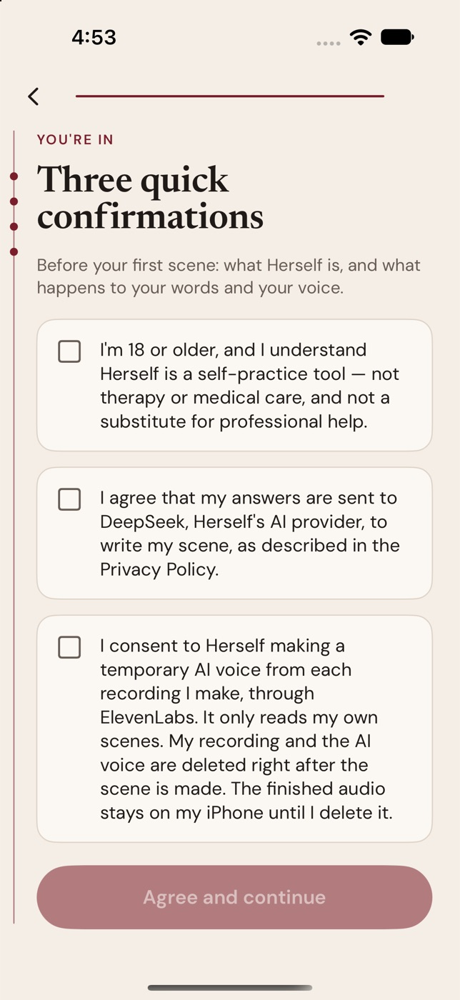

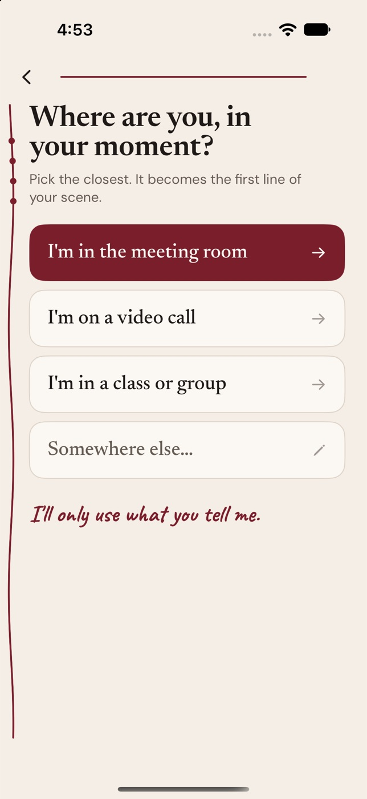

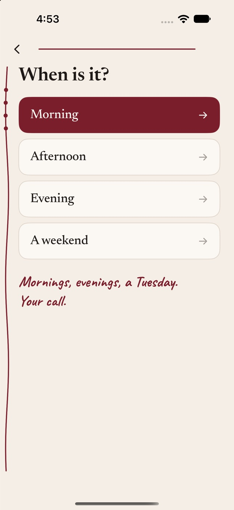

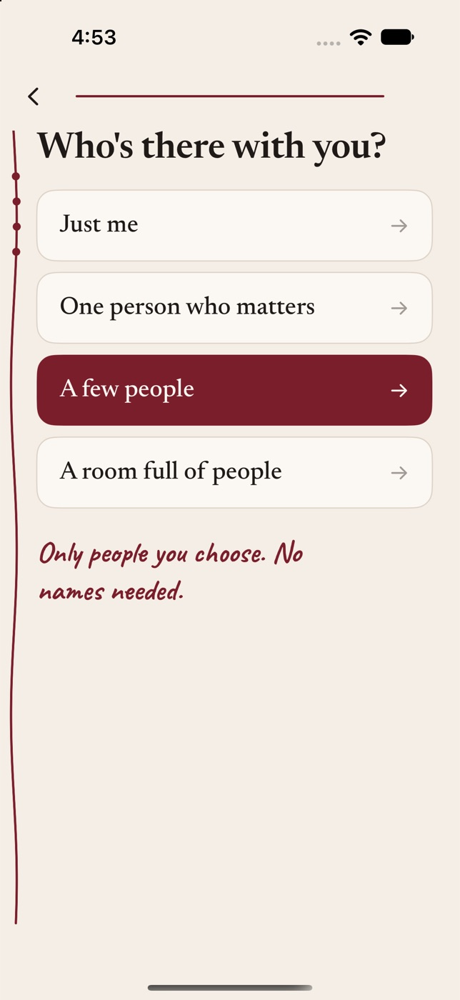

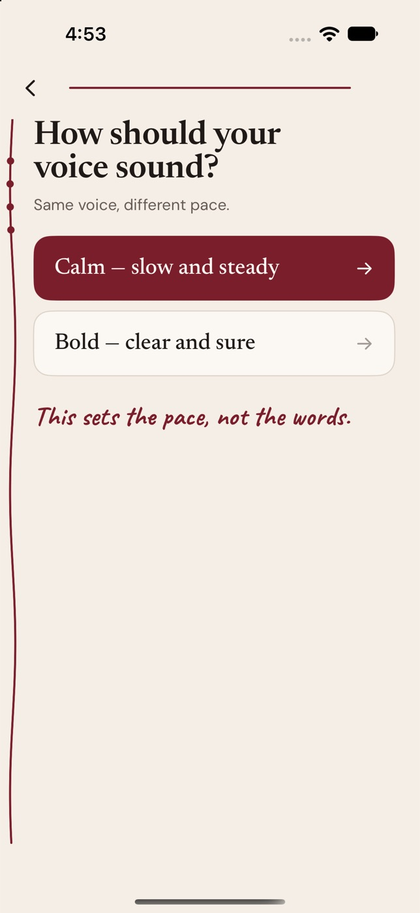

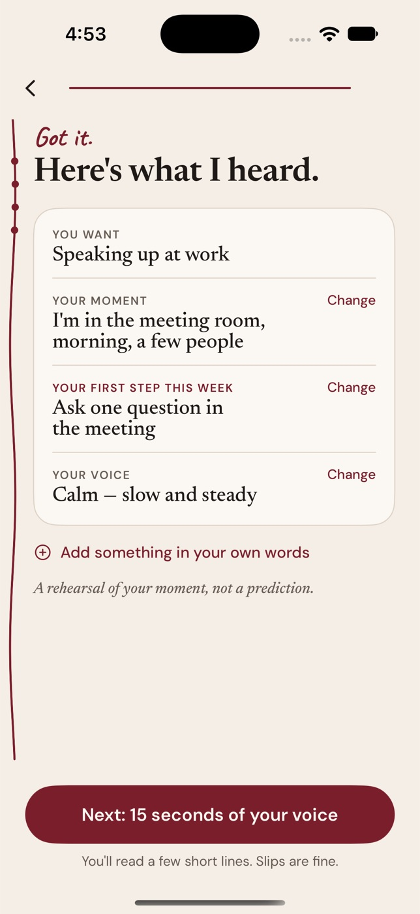

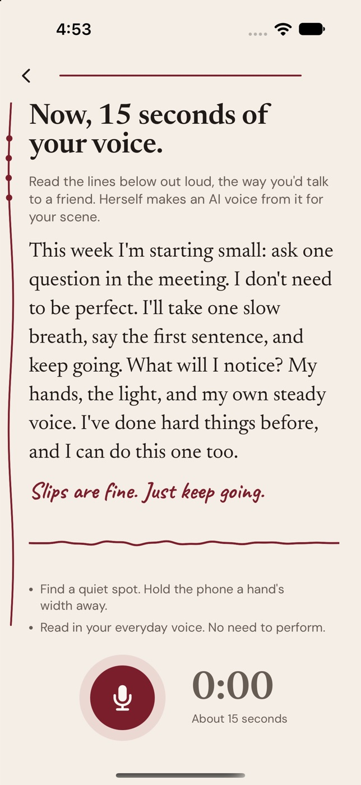

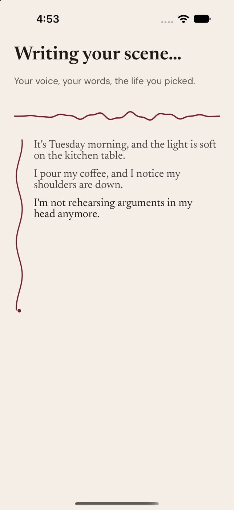

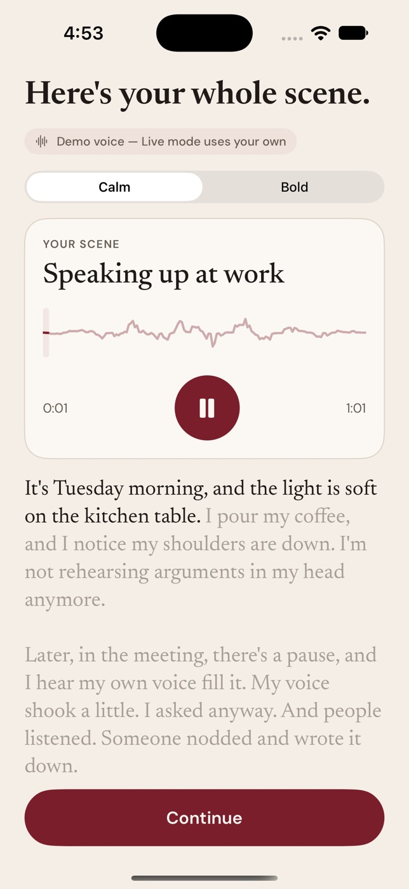

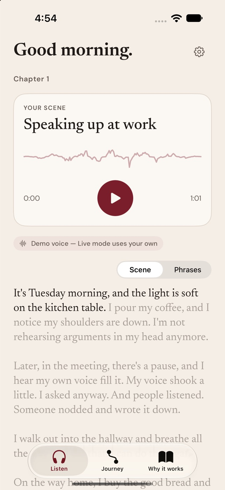

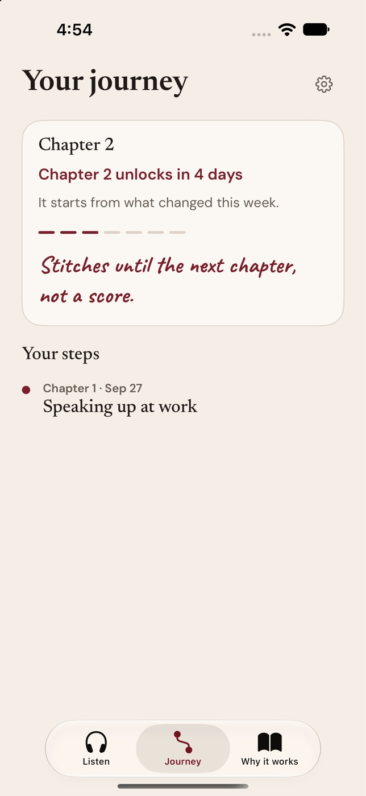

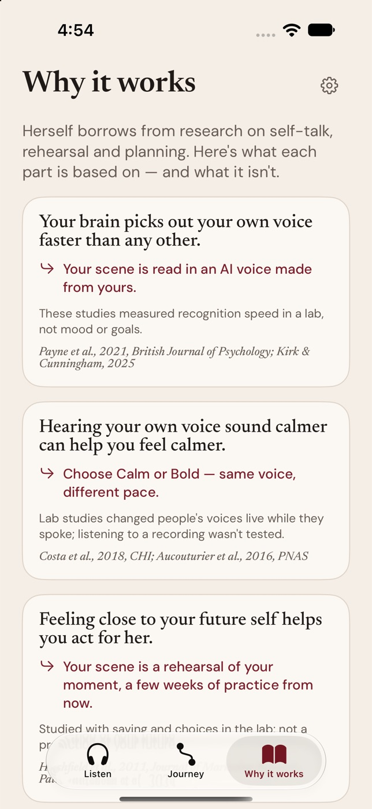
Кто: 27 основных персонажей (people.json) + 45 новых (people_holdout.json), 9 когорт, веса когорт. Движок: research/consilium-v3-2026-09-26/lib/tourney.py — ответы кэшируются, варианты скрыты под буквами S1…
Ситуация: она уже оплатила триал и дала согласия. Дальше идут квест, экран голоса и её сцена. Материалы продюсера (агент herself-quest-producer):
quest_variants.json,voice_framing.json;disclaimer.json,listen_copy.json,why_it_works.json.
Скрипты: run_core.py (R1), run_core2.py (R2), run_core3.py (R3). Итоги — agg_core*.json. Всего вызовов: R1 720 + R2 792 + R3 576 + R4 360 + R5 504 + R6 360 + R7 360 + R8 360 + прогресс 720 + 360 + звучание 576 + интейк 432 + 360 + боли 72 + вкладки 360 + фокус 432 + 432 + роль 504 + мягкий 432 + Home/IA 648 + вкладки-2 504 + вкладки-3 360 + петля 1 008 + петля-2 360 + годовой 360 + после сцены 1 080 + день 6 432 = 13 464.
R1 — варианты квеста и подачи голоса
Квест:
- Q1 — 3 касания;
- Q2 — 5 касаний, в том числе «What's one step…»;
- Q3 — Q2 плюс чат «What's on your mind?».
| лучший, основной / новый | доверие | худший | |
|---|---|---|---|
| Q1 | 0,22 / 0,29 | 0,05 / 0,07 | 0,11 / 0,10 |
| Q2 | 0,66 / 0,60 | 0,62 / 0,62 | 0,01 / 0,01 |
| Q3 | 0,13 / 0,11 | 0,33 / 0,31 | 0,88 / 0,89 |
- Чат отдельным шагом — худший вариант в 88% ответов. На экране чата уходят 24%.
- Внутри Q2 17% уходят на вопросе «What's one step you could take this week?» — он ощущается как домашнее задание. Ещё 10% уходят на вводном экране.
Голос:
- V1 «to the you a few weeks ahead» — идея основателя «ты из будущего»;
- V2 «coach-you»;
- V3 — простая подача.
| лучший | доверие | переобещание (0–4) | эзотерика | неловкость текста (0–4) | |
|---|---|---|---|---|---|
| V1 | 0,41 | 0,38 | 1,07 | 0,40 | 2,03 |
| V2 | 0,21 | 0,15 | 0,98 | 0,29 | 2,23 |
| V3 | 0,38 | 0,47 | 0,77 | 0,33 | 2,07 |
V2 назван худшим в 65% ответов. Все три текста для записи ощущаются «somewhat awkward».
R2 — доводка лидеров
Квест:
- Q4 — Q2 без вводного экрана; шаг подставлен из её плана и правится на итоговой карточке; «своими словами» — необязательная ссылка на карточке, а не шаг;
- Q5 — Q4 плюс экран «Pick your first small step» с уже выбранным шагом.
| лучший | доверие | худший | усилие | |
|---|---|---|---|---|
| Q2 | 0,37 / 0,33 | 0,56 / 0,50 | 0,45 / 0,49 | 1,77 |
| Q4 | 0,48 / 0,51 | 0,24 / 0,30 | 0,35 / 0,31 | 1,57 |
| Q5 | 0,16 / 0,16 | 0,21 / 0,20 | 0,21 / 0,20 | 1,69 |
Q4 — лучший и самый лёгкий. Q2, где она выбирает шаг сама, даёт больше доверия. В приложении Q4, Q5 доступен в отладке. Теперь главная точка ухода — итоговая карточка «Here's what I heard» (31%): это последний экран перед микрофоном.
Голос — новые тексты:
- R0 — нейтральный «kettle»;
- R4 — «This week I'm starting small: {её шаг}. I don't need to be perfect…».
| лучший | доверие | худший | переобещание | неловкость | запишет сейчас | |
|---|---|---|---|---|---|---|
| V1 + R1 | 0,21 | 0,18 | 0,32 | 1,07 | 2,03 | 0,59 |
| V3 + R3 | 0,10 | 0,10 | 0,12 | 0,77 | 2,06 | 0,61 |
| V3 + R0 | 0,05 | 0,04 | 0,23 | 0,84 | 1,82 | 0,62 |
| V3 + R4 (V3w) | 0,38 | 0,33 | 0,05 | 0,63 | 1,61 | 0,63 |
| V5 = V3 + R4 + строка про будущую себя | 0,25 | 0,36 | 0,28 | 1,06 | 1,68 | 0,63 |
На новом наборе персонажей то же самое.
- Победитель — V3w.
- Строка про будущую себя (Hershfield) лучше объясняет, «зачем мой голос» (3,45 против 3,26), но поднимает переобещание с 0,63 до 1,06. → решение основателя, см. APPROVALS.
R3 — итоговая карточка перед микрофоном
Четыре варианта карточки:
- H1 — как есть;
- H2 — кнопка честно говорит, что дальше: «Next: 15 seconds of your voice», под ней «You'll read … short lines. Slips are fine.»;
- H3 — карточка слита с экраном голоса;
- H4 — H2 плюс подсвеченный «Your first step — tap to change».
| лучший | доверие | худший | |
|---|---|---|---|
| H1 | 0,19 / 0,18 | 0,14 / 0,14 | 0,46 / 0,48 |
| H2 | 0,33 / 0,33 | 0,43 / 0,44 | 0,12 / 0,14 |
| H3 | 0,34 / 0,36 | 0,23 / 0,23 | 0,28 / 0,24 |
| H4 | 0,14 / 0,12 | 0,20 / 0,19 | 0,14 / 0,14 |
По отдельным прогонам варианты равны: дошли до записи 0,44–0,49, в основном наборе H1 и H2 выше, чем H3. Берём H2.
R4 — от чьего лица сцена (`run_pov.py`, 360 вызовов)
Одна и та же сцена (Speaking up at work) её голосом в трёх вариантах: «я», «ты» и гибрид (сцена от «я», последние строки на «ты»).
| лучший | худший | «звучит как мой внутренний голос» (0–4) | повторит завтра | |
|---|---|---|---|---|
| «я» | 0,59 / 0,61 | 0,04 / 0,03 | 2,77 / 2,58 | 0,75 / 0,76 |
| гибрид | 0,31 / 0,32 | 0,19 / 0,18 | 2,78 / 2,57 | 0,74 / 0,75 |
| «ты» | 0,10 / 0,07 | 0,77 / 0,79 | 2,60 / 2,41 | 0,73 / 0,74 |
Сцена остаётся от первого лица (AFFIRMATION_SPEC без изменений). Карточка «Talking to yourself as "you"» (Kross 2014) убрана из «Why it works»: продукт этого больше не делает.
R5–R6 — CJM после оплаты (`run_cjm.py`, `run_cjm2.py`)
Повод — отзыв основателя 27.09: «нажал "старт триал", поставил галочки — и сразу вопросы. Ничего не понятно. Похвали и объясни, что происходит и что будет дальше». Каждый персонаж проходит путь после оплаты экран за экраном. На каждом экране: насколько понятно, что происходит и зачем (0–4), и что она чувствует.
Варианты моста:
- B0 — как было: оплата → 3 галочки → «Where are you, in your moment?»;
- B1 — похвала + карта «что дальше» до галочек;
- B2 — галочки → похвала + карта;
- B3 — B2 + подписи «Step 1 of 3 · Your moment» на вопросах + первый вопрос проще («Picture the moment you want to go well. Where are you?»);
- B4 — похвала и карта в шапке экрана согласий, отдельного экрана-моста нет;
- B5 (R6) — B3 + тёплая шапка на согласиях (похвала, «3 minutes away», путь одной строкой).
| лучший, основной / новый | худший | «понятно, что будет в ближайшие 3 минуты» (0–4) | негатив на согласиях | |
|---|---|---|---|---|
| B0 как было | 0,01 / 0,01 | 0,67 / 0,69 | 2,92 / 2,90 | 0,71 / 0,72 |
| B1 карта до галочек | 0,25 / 0,23 | 0,12 / 0,12 | 3,55 / 3,56 | 0,83 / 0,86 |
| B2 галочки → карта | 0,10 / 0,09 | 0,06 / 0,05 | 3,77 / 3,77 | 0,68 / 0,72 |
| B3 + подписи шагов | 0,55 / 0,59 | 0,03 / 0,03 | 3,83 / 3,83 | 0,71 / 0,67 |
| B4 всё на согласиях | 0,09 / 0,09 | 0,13 / 0,11 | 3,37 / 3,36 | 0,36 / 0,33 |
R6 (B3 против B4 против B5): B5 лучший 0,63 / 0,65, но и худший 0,52 / 0,49 — панель раскололась: путь показан дважды подряд, и это читается как повтор. При этом тёплая шапка поднимает понимание на самом экране согласий с 3,14 до 3,40 и снижает негатив с 0,7 до 0,5.
Что видно по экранам (B0):
- На согласиях негатив 0,7 — «confused / suspicious / annoyed». Это самая холодная точка пути во всех вариантах, кроме B4.
- На первом вопросе «Where are you, in your moment?» негатив 0,48–0,51; с картой и подписью шага падает до 0,14–0,21.
- Дальше по квесту понимание 3,0–3,5, негатив ниже 0,3: вопросы сами по себе понятны, непонятен переход к ним.
В приложении: B3 + тёплая шапка на согласиях без повтора карты:
- согласия: «Good choice.» → «Your first scene is about 3 minutes away.» → «First, three quick confirmations…» → галочки;
- экран-мост: «Good choice. Now let's make your first scene.» → три узла (касания · 15 секунд голоса · сцена) → «Then every week: a new chapter» → «I'll walk you through it.» → «Let's start»;
- на вопросах подпись «STEP 1 OF 3 · YOUR MOMENT», на записи «STEP 2 OF 3 · YOUR VOICE»;
- первый вопрос: «Picture the moment you want to go well. Where are you?».
Точно такой гибрид отдельно не прогонялся: B3 проверен как безопасный, шапка взята из B5 по её экранным метрикам.
Оговорка: «дошла до записи» (reach) между вариантами сравнивать нельзя — чем больше экранов, тем больше вариантов ответа «уйдёт на…», и доля «дойдёт» механически падает. Смотреть на понимание и чувство по экранам и на сравнение бок о бок.
R7 — «зачем я тут на что-то отвечаю» (`run_cjm3.py`)
Основатель прошёл мост B3 в симуляторе и всё равно потерялся на первом вопросе. Варианты:
- B3 — как было: мост с тремя узлами, «Step 1 of 3 · Your moment», «Picture the moment…»;
- E1 — явное «зачем»: мост говорит, что Herself пишет сцену из её ответов («Answer four quick questions»), первый вопрос начинается с «Four quick questions. Your scene is written from your answers…», у каждого вопроса подпись, для чего он;
- E2 — E1 без экрана-моста.
| лучший | худший | «знает, зачем отвечает» (0–4) | понимание на Q1 | |
|---|---|---|---|---|
| B3 | 0,00 / 0,00 | 0,17 / 0,18 | 3,64 / 3,62 | 3,34 / 3,36 |
| E1 | 0,99 / 0,99 | 0,15 / 0,17 | 3,93 / 3,91 | 3,73 / 3,73 |
| E2 без моста | 0,01 / 0,01 | 0,68 / 0,66 | 3,91 / 3,89 | 3,65 / 3,59 |
Нужны оба: и мост, и «зачем» прямо на вопросе. Без моста «зачем» на вопросе почти не теряет в понимании, но бок о бок это худший вариант у двух третей.
R8 — «Где я нахожусь? Сейчас что ли?» (`run_cjm4.py`)
«Where are you, in your moment?» читается как «где ты сейчас», а «твой момент» нигде не объяснён. Варианты:
- E1 — как в R7 (места: meeting room, video call, class);
- M1 — сверху её выбор до пейвола («You picked Believe in myself — speaking up at work. Your scene rehearses one real moment where that matters»), вопрос «Which moment do you want to go well?», варианты — ситуации («A meeting, when there's a pause and I could speak»), строка «Not where you are now — the moment you want to rehearse»;
- M2 — M1 без напоминания о выборе и без строки.
| лучший | худший | понимание на Q1 | |
|---|---|---|---|
| E1 места | 0,23 / 0,26 | 0,39 / 0,35 | 3,73 / 3,73 |
| M1 момент + её выбор | 0,49 / 0,45 | 0,21 / 0,25 | 3,63 / 3,62 |
| M2 момент без якоря | 0,28 / 0,29 | 0,40 / 0,41 | 3,53 / 3,52 |
Напоминание о её выборе — то, что держит вопрос: без него момент-вопрос не лучше места-вопроса. В приложении M1, все 8 целей переписаны в ситуации.
Прогресс и похвала (`run_progress.py`, `run_progress2.py`, механика — `praise_mechanic.json`)
Вопросы основателя: «что случается, когда я прослушиваю? отмечается в календаре? почему я должен хотеть это отслеживать? могу ли записать новую?» Субагент herself-praise-mechanic описал три механики (59 строк похвалы, все проходят линтер):
- V1 «Стежки» — стежок за прослушивание, узел за главу, никаких дней;
- V2 «Календарь моментов» — месяц с точками в дни прослушивания;
- V3 «Журнал репетиций» — прогресс = её шаги и что изменилось; строка «Rehearsed 4 times this week».
| лучший | худший | хочет смотреть (0–4) | давление после 6 дней тишины (0–4) | смысл, не счёт | |
|---|---|---|---|---|---|
| V1 стежки | 0,26 / 0,27 | 0,15 / 0,16 | 2,51 / 2,57 | 0,22 / 0,24 | 0,77 / 0,78 |
| V2 календарь | 0,16 / 0,18 | 0,40 / 0,41 | 2,38 / 2,45 | 0,32 / 0,34 | 0,76 / 0,76 |
| V3 журнал | 0,58 / 0,55 | 0,45 / 0,43 | 2,62 / 2,65 | 0,55 / 0,62 | 0,80 / 0,80 |
Журнал хотят больше всех, но он раскалывает панель: счёт «за неделю» читается как норма. Раунд 2 — гибрид V3h: карточки недель с её шагом и итогом + стежок и общий счёт «Listened 4 times» за прослушивание, без счёта за неделю, дни не рисуются.
| лучший | худший | давление | похвала «заслуженная, взрослая» | |
|---|---|---|---|---|
| V1 | 0,21 / 0,19 | 0,24 / 0,23 | 0,22 / 0,24 | 0,69 / 0,68 |
| V3 | 0,33 / 0,33 | 0,60 / 0,64 | 0,55 / 0,62 | 0,71 / 0,70 |
| V3h гибрид | 0,47 / 0,48 | 0,17 / 0,13 | 0,41 / 0,44 | 0,76 / 0,75 |
Удержание через месяц у всех механик одинаковое (0,44–0,49): прогресс не двигает удержание, а держит смысл и не вредит. В приложении V3h. Календарь не берём (EDITOR §11: сетка пустых дней = серия).
Новая сцена вне расписания (три политики):
| лучший | худший | честно за деньги | «одной в неделю хватает» | |
|---|---|---|---|---|
| N1 только по расписанию | 0,22 / 0,25 | 0,31 / 0,28 | 0,49 / 0,46 | 0,51 / 0,51 |
| N2 «сделать сейчас» за счёт следующей недели | 0,18 / 0,21 | 0,65 / 0,67 | 0,52 / 0,50 | 0,47 / 0,47 |
| N3 переделать текущую главу один раз | 0,60 / 0,54 | 0,04 / 0,05 | 0,55 / 0,53 | 0,56 / 0,56 |
В приложении N3: Journey → «Remake this chapter» → карточка «Here's what I heard» с её ответами → новая запись → сцена заменяет текущую главу, номер и прослушивания остаются, расписание не сдвигается. Воркер: одна переделка на главу (credit/remake). Цена — ещё одно создание голоса ElevenLabs, см. APPROVALS.
Как должна звучать сцена (`run_sound.py`)
Повод — основатель 27.09: «прорабатывай консилиумом так, как юзеры хотят, чтобы аффирмация звучала». Пять манер одной сцены (цель «Believe in myself», её слова: «I go quiet when everyone looks at me», критик: «You're not ready»):
| на что надеялась при покупке | слушать каждый день | худшая | «меня поняли» | переобещание (0–4) | верит | |
|---|---|---|---|---|---|---|
| S1 обычный день (спец v2) | 0,03 / 0,04 | 0,08 / 0,08 | 0,03 / 0,04 | 0,73 / 0,71 | 0,50 / 0,52 | 0,79 / 0,78 |
| S2 ответ критику построчно | 0,09 / 0,12 | 0,53 / 0,50 | 0,10 / 0,09 | 0,75 / 0,71 | 0,66 / 0,66 | 0,79 / 0,78 |
| S3 её слова дословно | 0,29 / 0,35 | 0,28 / 0,30 | 0,04 / 0,03 | 0,78 / 0,75 | 0,60 / 0,59 | 0,78 / 0,76 |
| S4 тёплая, про чувства | 0,01 / 0,02 | 0,09 / 0,10 | 0,15 / 0,16 | 0,66 / 0,63 | 0,29 / 0,32 | 0,75 / 0,74 |
| S5 «через год», как у Stella | 0,58 / 0,48 | 0,01 / 0,02 | 0,68 / 0,67 | 0,68 / 0,64 | 2,11 / 2,04 | 0,63 / 0,62 |
«Через год» — то, чего ждали при покупке, и худшее для ежедневного прослушивания: продаёт и разочаровывает. Прямые предпочтения: сцена из действий 48–52% и ответа голосу в голове 36–38%; цитировать её слова дословно — 68–71%; длина минута — 89–93%; конец — шаг 47% или повторяемая строка 41%. Что даст «меня поняли» до сцены: назвать точную фразу критика — 65%, открытый вопрос — 19–20%, диалог — 10%.
Сцена v3 (AFFIRMATION_SPEC.md, worker.js → SCENE_SYSTEM): репетиция одного момента из действий; цитирует фразу критика один раз и отвечает ей делом; её слова дословно; минута; конец на шаге и повторяемой строке (её собственной, если дала).
Глубокий интейк (`run_intake.py`, `run_intake2.py`, дизайн — `intake_variants.json`)
Повод — основатель 27.09: «человек хочет, чтобы ему в душу проникли… сейчас по-детски, мы никакую информацию не вытянули». Продюсер собрал три воронки: I1 «желание → почему → преграда → чувство → шаг» (WOOP), I2 «день из её жизни», I3 «что бы ты сказала подруге» (устала от → сказала бы подруге → тайно надеюсь → не говорю вслух → что покажет, что работает → чувство → открытое поле).
R1, против текущих 4 касаний (Q4):
| «меня услышали» (0–4) | сцена будет про меня | усилие | похоже на терапию (0–4) | дошла до записи | «по-настоящему поняли» | |
|---|---|---|---|---|---|---|
| Q4 4 касания | 2,17 / 2,14 | 0,64 / 0,63 | 1,79 / 1,85 | 1,81 / 1,79 | 0,46 / 0,44 | 0,00 / 0,00 |
| I1 WOOP | 2,68 / 2,58 | 0,72 / 0,69 | 2,00 / 2,04 | 1,50 / 1,59 | 0,38 / 0,35 | 0,03 / 0,07 |
| I2 день из жизни | 2,69 / 2,58 | 0,72 / 0,69 | 2,05 / 2,11 | 1,56 / 1,63 | 0,38 / 0,35 | 0,01 / 0,03 |
| I3 подруге | 3,26 / 3,10 | 0,72 / 0,70 | 2,09 / 2,14 | 1,24 / 1,34 | 0,39 / 0,37 | 0,95 / 0,90 |
I3 глубже всех и меньше всех похож на терапию (потому что разговор как с подругой), но 25–27% закрывают приложение на его первом экране «что ты не говоришь вслух». Сцену, которую хочется слушать, дают I2 и I3 (0,32–0,35 против 0,08 у Q4).
R2, перестановка I3r (устала от → подруге → надеюсь → *не говорю вслух, необязательный, 4-й* → покажет → чувство → поле):
| лучший | слишком много, закроет | похоже на анкету / терапию | «меня услышали» | усилие | терапия (0–4) | |
|---|---|---|---|---|---|---|
| I1 | 0,31 / 0,36 | 0,05 / 0,05 | 0,24 / 0,22 | 2,70 / 2,60 | 1,99 / 2,05 | 1,50 / 1,57 |
| I3 | 0,27 / 0,22 | 0,85 / 0,85 | 0,70 / 0,73 | 3,25 / 3,10 | 2,08 / 2,13 | 1,24 / 1,35 |
| I3r | 0,42 / 0,41 | 0,10 / 0,10 | 0,06 / 0,05 | 3,16 / 2,98 | 1,85 / 1,92 | 0,94 / 1,02 |
Порядок решает: те же вопросы в мягком порядке — легче старого квеста по усилию, глубина почти вся сохранена, «тихий» вопрос отвечают 50–54%. Точка ухода осталась на нём (23–26%), но он необязательный.
В приложении I3r (quest.json → intake, Onboarding/IntakeScreens.swift): шесть вопросов + открытое поле; «In my own words…» открывает поле прямо под вариантами; её слова идут в сцену дословно; каждое набранное поле — через локальный список кризисных слов (988), слова горя ставят мягкий флаг; карточка «Here's what I heard» цитирует её ответы построчно, каждая строка правится. Q4/Q5 остались в отладке.
Боли когорт против интейка (`run_pains.py`)
Повод — основатель 27.09: «у нас боли в когортах определены — нужной, деньги, отношения, тело, семья, здоровье, круг общения». Каждый персонаж видит интейк для своей карточки цели.
| когорта | попадание в боль (0–4) | «мои слова» | чего не достаёт | какой вопрос добавить | карточки не хватает |
|---|---|---|---|---|---|
| self_worth | 3,4 / 3,2 | 0,70 / 0,64 | деньги 0,31–0,41 | «когда последний раз гордилась собой» | нет 84% |
| love | 3,2 / 3,1 | 0,62 / 0,59 | деньги 0,33 | «кому хочешь быть нужной» 0,52–0,55 | нет 50% / «нужной» 46% |
| money | 3,6 / 3,3 | 0,59 / 0,54 | семья 0,36–0,40 | «чего боишься, если ничего не изменится» | нет 53–72% |
| career | 2,7 / 3,0 | 0,62 / 0,59 | деньги | «нужной» / «боишься» | «карьера» 50% (осн.) |
| body_glow | 3,2 / 2,8 | 0,62 / 0,59 | здоровье 0,31–0,36 | «что нужно телу на этой неделе» | нет 59–86% |
| home_life | 2,5 / 2,7 | 0,54 / 0,55 | деньги 0,35–0,62 | «опиши обычное утро через несколько месяцев» | нет 76–87% |
| friends | 3,3 / 3,2 | 0,65 / 0,58 | здоровье / семья | «кому хочешь быть нужной» 0,55–0,63 | нет 66–74% |
| family | 1,2 / 1,2 | 0,50 / 0,46 | семья 0,86–0,94 | «нужной» | «Family» 88–90% |
| new_chapter | 3,0 / 2,8 | 0,66 / 0,61 | семья 0,26–0,28 | «кому хочешь быть нужной» | нет 52–76% |
В целом 3,0–3,1: вопросы называют боль. Две дыры: семья / мама (карточки нет — в APPROVALS) и жильё (боль в деньгах на него). Тревожно: «безопасно ли отвечать» — 0,43–0,45.
В приложении: седьмой вопрос под каждую цель (intake.screens[extra]: «Who do you want to feel needed by», «When were you last proud of yourself», «What does your body need this week», «Describe a good ordinary morning», «What are you afraid happens if nothing changes»); строка «Nothing here is shared with anyone. Delete it anytime in Settings → Your data» на каждом экране с полем; в «My people» — варианты про детей.
Вкладки (`run_tabs.py`)
| лучший | худший | понятно, где что (0–4) | чего не хватает | |
|---|---|---|---|---|
| T3 Listen · Journey · Why it works (как было) | 0,27 / 0,25 | 0,34 / 0,38 | 3,73 / 3,70 | «сегодня — что делать сейчас» 44–45% |
| T2 Today · Story (+ Why внизу) | 0,60 / 0,62 | 0,10 / 0,10 | 3,71 / 3,67 | напоминание 23–28% |
| T4 + вкладка Record | 0,12 / 0,13 | 0,57 / 0,53 | 3,76 / 3,73 | «сегодня» 47% |
«Why it works» откроют хотя бы раз 63–71% — оставляем, но внизу Story. В приложении T2 + мягкое ежедневное напоминание в Settings (одно уведомление в её время, без серий).
Фокус: «сначала направление» (`run_focus.py`, `run_focus2.py`)
Повод — основатель 27.09: «всё размыто, непонятно, куда ведёт; сначала задать направление, потом чуть править; спрашивать "это важно? больше / меньше?"».
| лучший | худший | знает, про что сцена (0–4) | фокус на её деле | усилие | «услышали» | |
|---|---|---|---|---|---|---|
| D0 как было (подруга, без направления) | 0,03–0,05 | 0,93–0,94 | 3,1–3,4 | 0,77 | 2,2 | 3,2–3,4 |
| D1 направление → точнее → важность трёх аспектов | 0,28–0,34 | 0,01 | 3,5–3,6 | 0,83 | 1,7 | 3,0 |
| D2 направление → момент → переспросить один раз | 0,36–0,60 | 0,00–0,01 | 3,3–3,5 | 0,80 | 2,0 | 2,7–2,9 |
| D3 оценить все 8 сфер | 0,01–0,02 | 0,55–0,59 | 3,5 | 0,77 | 1,8 | 2,8 |
| F1 = D1 + вопросы «подруге» | 0,29 | 0,04–0,06 | 3,3 | 0,80 | 2,1–2,2 | 3,0 |
81% хотят способ сказать, что важнее, а что меньше. Опрос всех сфер читается как анкета. F1 добавил глубины, но не конкретики, и потяжелел.
Роль спрашивающего (`run_role.py`)
| лучший | худший | «понятно, кто и зачем» (0–4) | честно ответит | эзотерика | |
|---|---|---|---|---|---|
| R0 нить, как есть | 0,18–0,19 | 0,03 | 2,9–3,0 | 0,50 | 0,34–0,36 |
| R1 «твой сценарист» | 0,13–0,14 | 0,11–0,15 | 3,0–3,1 | 0,49–0,50 | 0,35–0,38 |
| R2 «ты через несколько недель» | 0,20–0,21 | 0,47–0,52 | 3,0 | 0,55–0,56 | 0,53 |
| R3 «подруга, которая слушает» | 0,38–0,39 | 0,14 | 3,2 | 0,55–0,57 | 0,28–0,31 |
| R4 «твой коуч» | 0,08–0,10 | 0,20–0,21 | 3,0 | 0,51 | 0,34–0,36 |
Нить остаётся без имени и лица (D11), но представляется на мосте: «Think of me as the friend who actually listens. A few questions, no advice, nothing shared.»
Мягкий направляющий интейк (`run_soft.py`)
Повод — основатель 27.09: «могу забыть, что тапнула; формулировки мягче ("богатая девочка без долгов"); конфетка после каждого ответа; крючки-конкретика». Персонажам сказано: «наутро она не помнит, что тапнула вчера».
| лучший | худший | «хоть один вариант точно мой» | конфетка искренняя | заполнит «три вещи» | усилие | |
|---|---|---|---|---|---|---|
| F1 фокус первым | 0,09–0,10 | 0,72–0,73 | 0,79 | (хотят 0,74) | (хотят 0,72) | 2,1 |
| G1 направление заново + мягкие варианты + конфетка + три вещи | 0,88 | 0,07–0,08 | 0,83 | 0,45–0,46 | 0,69 | 1,95 |
| G2 без конфетки | 0,01 | 0,12–0,13 | 0,82–0,83 | (хотят 0,73) | 0,68 | 2,0 |
| G3 без трёх вещей | 0,01–0,02 | 0,07–0,08 | 0,81–0,82 | 0,44–0,45 | (хотят 0,69–0,70) | 1,9 |
Конфетку хотят 73–74%, но общие похвалы («Got it. That's a good place to start») искренни лишь для 45%. В приложении строка отзеркаливает её ответ: «“Feel allowed to earn more” — got it.» / «… That goes straight into your scene.»
Итоговый порядок (G1, в приложении и в TestFlight 5): мост с ролью → «What do you want more of right now?» (8 направлений, её вчерашний выбор отмечен «You picked this earlier») → «Inside that — which is closest?» (4 мягких направления + своими словами) → три реальные вещи (место, человек, предмет — дословно в сцену) → «что бы сказала подруге» → тихая часть (необязательно) → «что покажет, что работает» → чувство → открытое поле → «Here's what I heard». Взвешивание «очень / отчасти / не сейчас» и вопрос когорты оставлены в отладке.
Что взяли у лидеров: у Stella и Aya анкета 5–15 минут до пейвола — главная жалоба (26–61% плохих отзывов), у нас ≤ 90 с и после оплаты; пользовательницы Aya приносят свои детали и ценят их в озвучке → «три вещи» дословно; у Stella просят править детали → каждая строка карточки правится; минута как длина — 89–93%.
Home и структура вкладок (`run_home.py`)
Повод — основатель 27.09: «две вкладки — мало; где прогресс, следующий шаг, ретеншн, создать ещё, прослушивания, почему остаться, "через 4 дня", править / удалить». Аудит Home по 8 критериям и три структуры от агента-дизайнера; панель 72 персонажа.
| лучший | худший | понятно, что делать (0–4) | один CTA | не перегружено | причина вернуться | где «когда следующая» | где удалить | где создать | |
|---|---|---|---|---|---|---|---|---|---|
| IA-2 Home · Story | 0,44 / 0,49 | 0,07 | 3,7 / 3,6 | 3,7 | 3,7 | 1,6 / 1,7 | Home 1,00 | Story 0,96 | Home 0,95 |
| IA-3 Home · Library · Journey | 0,31 / 0,27 | 0,05 | 3,4 / 3,2 | 3,5 | 3,4 | 1,6 / 1,8 | Home 0,76 | Library 1,00 | Library 0,98 |
| IA-4 + You | 0,25 / 0,23 | 0,88 | 3,4 / 3,1 | 3,5 | 3,4 | 1,7 / 1,9 | Home 0,53 | Library 1,00 | Library 0,99 |
Две вкладки победили второй раз. Все пункты основателя в IA-2 находятся: дата следующей сцены — на Home (100%), удалить/переименовать — в Story (96%), новая сцена — на Home (95%). Слабое место у всех структур одно — причина вернуться завтра 1,6–1,9 из 4; удержание через месяц у всех 0,38–0,41 (структура его не двигает).
Home: «Listen now» (одна кнопка Play) против «Your day» (три дела дня):
| лучший | худший | утром перед моментом откроет и нажмёт play | один CTA | не перегружено | понятно, что делать | пакет «раньше?» честен | |
|---|---|---|---|---|---|---|---|
| H-A Listen now | 0,58 / 0,60 | 0,12 | 0,64 / 0,65 | 3,96 | 2,4 / 2,6 | 2,6 / 2,3 | 0,57 / 0,53 |
| H-B Your day | 0,42 / 0,40 | 0,87 / 0,89 | 0,68 / 0,69 | 3,4 | 3,0 / 3,1 | 2,7 / 2,3 | 0,57 / 0,53 |
В приложении: IA-2 + H-A, Home ≤ 9 элементов: приветствие · «Chapter k · её фокус» · плеер (Phrases / таймер сна / повтор за «…») · стежки + «Listened n times» · строка похвалы · её шаг рукописно · «Chapter k+1 arrives Wednesday» / «Start chapter» · купленная сцена тихой ссылкой · «All scenes». Story: карточка следующей главы, лог недель, «Your scenes» (play / rename / delete / remake, «New scene», пакеты только когда сцен нет: «Your next scene arrives Wednesday. Want one sooner?»), «Why it works». Напоминания: утро / вечер / «перед моментом». Кредиты: недельный, затем купленные (consumable, баланс на воркере).
Критика продуктового дизайнера (агент, по победителю): на Home было 11 элементов, отсчёт дважды, список глав в трёх местах и ни слова про завтра — отсюда «перегружено» и слабая «причина вернуться». Применено: Home ≤ 9 элементов, Play — единственная заливная кнопка; вместо карточки отсчёта — строка-обещание «Chapter 5 arrives Thursday.» (тап → Story); «Add one line for chapter 5» — её строка идёт в бриф следующей главы; карточка «A quiet nudge tomorrow? Morning · Evening · Before my moment · Not now» один раз после первого прослушивания; Phrases / таймер / повтор / переделка — за «…»; в Story единственный отсчёт, один список глав (play · rename · remake · delete), «Why it works» — ссылкой; пакеты — только в шите по тапу «New scene» при нуле, рядом всегда «Your next scene is included Thursday» и «yours to keep». Отложено в APPROVALS: чип «When this week?» для подсказки «Tomorrow, with coffee: one minute before your meeting».
Вкладки, раунды 2–3: «Прогресс», календарь, дневник, настройки (`run_tabs2.py`, `run_tabs3.py`)
Повод — основатель 27.09: «Вкладка "Прогресс" с календарём и дневником — разве не нужна? Прослушал — это положилось туда. Настройки вынести вниз. Зачем всего две вкладки?» Проверено ровно его предложение.
Прямые вопросы (72 персонажа): «правильное число вкладок» — три у 63–64% (две — 17–18%, четыре — 18%); дневник нужен 83–86% (отдельной вкладкой 39–41%, внутри Story 43–45%); календарь с днями не нужен 64–69% («следят / серия»), хотят 19%; настройки вкладкой 37–39% против шестерёнки 37–42% — ничья; «записывать прослушивания туда, где я вижу» — 34–36%.
| лучший | худший | прогресс виден | не перегружено | причина вернуться | давление после 6 дней тишины | |
|---|---|---|---|---|---|---|
| P0 Home · Story (+ шестерёнка) | 0,13–0,15 | 0,02–0,03 | 2,9 | 3,4 | 1,8–1,9 | 1,8–2,0 |
| P1 Home · Прогресс (календарь + дневник) · Story · Настройки | 0,35–0,37 | 0,92–0,94 | 3,5–3,6 | 3,1–3,2 | 2,3–2,4 | 0,6–0,7 |
| P2 то же без календаря | 0,25–0,27 | 0,04 | 3,1–3,3 | 3,2 | 1,9–2,1 | 1,7–1,9 |
| P3 Home · Story · Настройки | 0,24–0,25 | 0,005 | 3,0 | 3,2 | 2,0 | 1,9–2,1 |
Предложение основателя поляризует: в одиночку оно лучшее по прогрессу и «причине вернуться», а бок о бок — худшее у 92–94%. Синтез по прямым ответам — три вкладки, «Прогресс» как дневник без сетки дней, настройки вкладкой — проверен отдельно (R3):
| лучший | худший | прогресс виден | не перегружено | причина вернуться | останется через месяц | |
|---|---|---|---|---|---|---|
| N1 Home · Прогресс (дневник) · Настройки | 0,38–0,41 | 0,04 | 3,5–3,7 | 3,4 | 2,0–2,1 | 0,41–0,44 |
| P1 четыре с календарём | 0,25–0,26 | 0,95–0,96 | 3,5–3,6 | 3,1–3,2 | 2,3–2,4 | 0,43–0,46 |
| P3 Home · Story · Настройки | 0,34–0,36 | 0,01 | 3,0 | 3,2 | 2,0 | 0,39–0,42 |
В приложении N1: Today · Progress · Settings. Progress — «Your first chapter · Listened n times in all» (только положительные счёты), карточка следующей главы (единственный отсчёт), «Your diary» — главы записями: шаг, что изменилось, её слова, сколько раз слушала, play, переименовать / переделать / удалить; «Why it works ›». Settings — данные, напоминания (утро / вечер / перед моментом), о приложении. Календарь дней оставлен за бортом; единственное, что он давал сверх дневника, — «причину вернуться» (+0,3), её дожимаем чипом дня и подсказкой на завтра (APPROVALS).
Кредиты: в v1 без покупных пакетов (решение основателя): триал — сцена сразу и вторая на 4-й день, дальше одна в неделю на любом тарифе, включая годовой.
Петля удержания, первая минута после сцены, название вкладки, годовой план (`run_loop.py`, `run_loop2.py`, `run_upgrade.py`)
Повод — основатель 27.09: «записали аффирмацию — что человек должен делать, где прослушать, где увидеть прогресс; я не вижу основания для ретеншена и необходимости вернуться». Шесть петель поверх нынешнего приложения; ни одна не тратит ElevenLabs (строка дня и 20-секундная версия — из шести фраз, озвученных вместе со сценой).
| лучший | худший | причина вернуться завтра (0–4) | открывает в неделю 2 | в неделю 3 | платит через месяц | давление после 6 дней | усилие | |
|---|---|---|---|---|---|---|---|---|
| L0 как сейчас | 0,04 | 0,02 | 2,1 | 0,52 | 0,47–0,48 | 0,35–0,37 | 1,4–1,5 | 1,1 |
| L1 строка дня (новая 10-секундная строка её голосом) | 0,14–0,20 | 0,13–0,15 | 2,5–2,6 | 0,55–0,56 | 0,48–0,49 | 0,36–0,38 | 1,3–1,4 | 0,8–0,9 |
| L2 вечерняя заметка → в следующую главу | 0,13–0,16 | 0,11–0,12 | 2,2–2,3 | 0,54 | 0,49–0,51 | 0,37–0,40 | 1,3–1,4 | 1,2 |
| L3 «My moment is soon» — 20 с перед моментом | 0,44 | 0,01 | 2,2 | 0,56 | 0,51–0,52 | 0,38–0,41 | 0,9–1,1 | 1,1 |
| L4 календарь с точками | 0,02 | 0,31–0,35 | 1,9 | 0,47–0,48 | 0,50–0,52 | 0,38–0,40 | 0,4 | 1,0 |
| L5 строка дня + вечерняя заметка | 0,17–0,20 | 0,37–0,40 | 2,4 | 0,55–0,56 | 0,48–0,49 | 0,37–0,39 | 1,3–1,4 | 1,3 |
Где смотреть, сколько раз слушала: 99–100% — во второй вкладке (так и сделано). Раунд 2 — лидеры вместе: L6 = момент + строка дня — лучший 0,51–0,52, причина вернуться 2,6, открывает в неделю 2 0,57, усилие 0,9, давление 0,9–1,1; но худший у 43–44% (два новых элемента — «лишнее»); один момент (L3) — лучший 0,28–0,31, худший 0,04–0,05. В приложении L6, строка дня — лёгкая (без карточки), выключается в отладке.
Первая минута после первой сцены:
| лучший | худший | знает, где прогресс (0–4) | причина вернуться | включит напоминание | |
|---|---|---|---|---|---|
| H0 как было: фразы на повторе → «когда слушать» → Today | 0,21–0,24 | 0,51–0,52 | 3,6 | 2,7–2,8 | 0,63–0,66 |
| H1 «Here's how your week works» + выбор напоминания | 0,51–0,56 | 0,14–0,15 | 3,7–3,8 | 2,5–2,6 | 0,64–0,66 |
| H2 первое прослушивание в дневник на глазах → дневник → напоминание | 0,23–0,25 | 0,33–0,34 | 3,7–3,8 | 2,5–2,6 | 0,64–0,66 |
Нашлась и дыра: старый экран «When is it easy to listen?» спрашивал время, но напоминание не ставил. В приложении H1, напоминание ставится по тапу.
Название второй вкладки: «как её назвать» — Chapters 84%, My Story 10–11%, Progress 2,5–3%, My journey 2%, Diary 0,5%; «какое название тянет открыть» — My Story 40–41%, Chapters 39%. Взято «Chapters», заголовок экрана «Your chapters».
Годовой план наверху настроек (как в Cysta, Hepatica, Refluxora, Two Sparrows; на недельном плане, включая триал):
| лучший | худший | перейдёт на годовой за месяц | «продаёт» (0–4) | доверие | понятно, что меняется | |
|---|---|---|---|---|---|---|
| U1 мягкая строка (Two Sparrows) | 0,35–0,37 | 0,00 | 0,47–0,48 | 1,4–1,5 | 0,61–0,63 | 2,2 |
| U2 карточка с бейджем «SAVE 90%» (Cysta) | 0,10 | 0,998 | 0,45–0,47 | 2,4–2,5 | 0,47–0,50 | 2,1 |
| U3 мягкая строка + «Same new chapter every week, in your own voice» | 0,53–0,54 | 0,00 | 0,51–0,54 | 1,2–1,3 | 0,64–0,65 | 2,6–2,7 |
В приложении U3. Недельный и годовой — одна группа подписок одного уровня: Apple переключает при продлении, поэтому «Apple confirms the switch and tells you when it starts», после покупки — «Your yearly plan starts {date}».
После сцены: путь, запросы, редактирование, после подписки, отслеживание (`run_after.py`)
Повод — основатель 27.09: «записали, получили аффирмацию — и что? какая механика отслеживания, дневник? что ещё нужно, какие фичи просят, как остаться; как создать, редактировать, удалить запись; что будет, когда закончится триал — не пускать, не давать слушать, не давать создавать?» Панель видит приложение как в TestFlight 8 (описание APP_NOW в скрипте): три вкладки, «My moment is soon», строка дня, главы, триал 7 дней, затем $7.99/нед. Пять опытов, 1 080 вызовов, итоги — agg_after.json. Везде «основной / новый» набор.
Путь, дни 1–30 (journey):
| Когда перестанет открывать | доля |
|---|---|
| дни 2–3 | 0,07 / 0,05 |
| около главы 2 (день 4) | 0,06 / 0,05 |
| первое списание (день 7) | 0,74 / 0,79 |
| неделя 2 | 0,05 / 0,04 |
| неделя 3 | 0,05 / 0,04 |
| после месяца | 0,03 / 0,03 |
| не перестанет | 0,005 / 0,007 |
Оставит подписку при первом списании: 0,43 / 0,39.
Оговорка: «когда перестанет открывать» — вынужденный выбор одного ответа, «не перестанет» выбрали 0,5–0,7%. Это распределение самой вероятной точки ухода, а не доля ушедших. «74–79% на 7-й день» значит: из тех, кто перестанет открывать, 74–79% уйдут при первом списании. Читать как отток нельзя — иначе число спорит с 39–43%, которые оставят подписку.
| Что удержит после триала | доля | Главная причина уйти | доля |
|---|---|---|---|
| свой голос | 0,30 / 0,30 | цена | 0,33 / 0,52 |
| «My moment is soon» | 0,28 / 0,25 | сомнение, что работает | 0,27 / 0,21 |
| цена, которую она принимает | 0,17 / 0,25 | забыла открыть | 0,15 / 0,11 |
| новая глава каждую неделю | 0,09 / 0,06 | перезапись и вопросы каждую неделю | 0,12 / 0,08 |
| дневник растёт | 0,08 / 0,06 | «каждый день одно и то же» | 0,11 / 0,08 |
| поправить сцену | 0,06 / 0,06 | хочет больше целей | 0,02 / 0,01 |
| строка дня | 0,02 / 0,02 | не уйдёт | 0,00 / 0,00 |
| напоминания | 0,01 / 0,01 | — | — |
| больше одной цели | 0,002 / 0,001 | — | — |
Обрыв один — первое списание. Самая вероятная точка ухода в дни 2–6 — у 10–13%, в недели 2–3 — 8–10%. Держат голос и момент; главы — 6–9%, дневник — 6–8%. Несколько целей почти никого не держат (0,1–0,2%), а «хочет больше целей» — причина ухода у 1–2%. Новый набор чаще уходит из-за цены (0,52 против 0,33). Значит, к 7-му дню у неё должно быть своё доказательство — отсюда опыт дня 6 ниже.
Что просят (features — первой и без чего уйдёт; journey — чего не хватало за месяц):
| Фича | попросит первой | уйдёт без неё | не хватало за месяц |
|---|---|---|---|
| править слова сцены (деталь, имя) | 0,42 / 0,40 | 0,21 / 0,15 | 0,17 / 0,15 |
| длинная версия 5–10 мин (сон, прогулка) | 0,12 / 0,12 | 0,06 / 0,07 | 0,34 / 0,33 |
| виджет с её строкой | 0,10 / 0,13 | 0,19 / 0,24 | 0,16 / 0,17 |
| несколько целей сразу | 0,11 / 0,07 | 0,05 / 0,05 | 0,09 / 0,08 |
| экспорт аудио | 0,08 / 0,12 | 0,13 / 0,14 | 0,05 / 0,06 |
| другая цель в следующей главе | 0,06 / 0,04 | 0,04 / 0,03 | 0,02 / 0,02 |
| паузы, чтобы повторять вслух | 0,06 / 0,05 | 0,05 / 0,06 | 0,03 / 0,03 |
| музыка под голосом | 0,03 / 0,02 | 0,02 / 0,02 | 0,03 / 0,02 |
| поделиться строкой | 0,004 / 0,007 | 0,04 / 0,04 | 0,03 / 0,03 |
| ежедневный дневник | 0,005 / 0,007 | 0,03 / 0,03 | 0,04 / 0,04 |
| Apple Watch | 0,005 / 0,02 | 0,03 / 0,04 | 0,006 / 0,006 |
| ничего, хватает | 0,007 / 0,01 | 0,14 / 0,14 | 0,05 / 0,07 |
Править слова — первая просьба у 40–42%. Длинной версии больше всего не хватает за месяц (33–34%). Без виджета уйдут 19–24%, без правки слов — 15–21%: в основном наборе первая правка (0,21 против 0,19), в новом — виджет (0,24 против 0,15). 14% не назвали фичу, без которой уйдут: им хватает.
Редактирование (edit):
| Вопрос | доля |
|---|---|
| «править сцену» — это поправить слова и детали | 0,56 / 0,57 |
| … другая цель или момент | 0,25 / 0,23 |
| … перезаписать голос | 0,13 / 0,12 |
| … спокойнее / смелее · переименовать · не нужно | 0,02 / 0,04 · 0,004 / 0,005 · 0,03 / 0,04 |
| прочитать 15 с заново ради правки — нормально | 0,68 / 0,69 |
| где искать правку и удаление: Settings | 0,87 / 0,85 |
| … в Chapters | 0,10 / 0,11 |
| … «…» на плеере · не знает | 0,02 / 0,02 · 0,01 / 0,01 |
| когда-нибудь захочет удалить сцену | 0,79 / 0,79 |
| одна переделка на главу — честно | 0,65 / 0,62 |
Оговорка: в описании приложения «delete scenes» названо только в Settings, поэтому 85–87% за Settings частично повторяют описание. Правку и удаление ставим в оба места. Перезапись раздражает 31–32%, переделку «скупой» считают 35–38%.
Когда подписка закончилась (lapse: она не продлила после триала или отменила позже, у неё две сцены своим голосом):
- E1 — закрыто всё: при входе планы, сцены не играют;
- E2 — её сцены играют; новые главы, переделки, «My moment is soon» и строка дня на паузе; на Today тихая карточка «Your scenes are still yours. New chapters are paused.» + «See plans»;
- E3 — играет только последняя сцена;
- E4 — E2 и через две недели один оффер «Come back: your first week back for $0.99».
| честно | вернётся за месяц | злость (0–4) | 1★ или возврат | посоветует подруге | лучший бок о бок | худший («в заложниках») | |
|---|---|---|---|---|---|---|---|
| E1 закрыть всё | 0,46 / 0,44 | 0,25 / 0,25 | 2,49 / 2,52 | 0,60 / 0,61 | 0,33 / 0,33 | 0,003 / 0,002 | 0,94 / 0,95 |
| E2 сцены остаются | 0,76 / 0,75 | 0,26 / 0,25 | 0,70 / 0,69 | 0,26 / 0,27 | 0,41 / 0,42 | 0,72 / 0,70 | 0,00 / 0,001 |
| E3 только последняя | 0,49 / 0,48 | 0,25 / 0,25 | 2,14 / 2,19 | 0,49 / 0,52 | 0,36 / 0,37 | 0,004 / 0,005 | 0,06 / 0,05 |
| E4 E2 + $0.99 через 2 недели | 0,71 / 0,69 | 0,24 / 0,24 | 0,92 / 1,02 | 0,29 / 0,32 | 0,36 / 0,37 | 0,27 / 0,29 | 0,001 / 0,001 |
Замок не возвращает: за месяц вернутся 24–26% при любом варианте. Он только злит: 1★ или возврат 0,60 против 0,26, злость 2,5 из 4 — между «Annoyed» и «held hostage». «Только последняя сцена» почти так же плоха (1★ 0,49–0,52). Оффер $0.99 возвратов не добавил (0,24), злость выше (0,92–1,02 против 0,69–0,70) — не делаем. В E2 на паузе стояли и «My moment is soon», и строка дня. В сборке 9 они играют: это файлы на iPhone, ElevenLabs они не тратят (см. «Отзывы и лучшие практики»).
Отслеживание (track; T0 — как сейчас: стежок, «Listened n times», моменты, вопрос недели в дневнике):
- T1 — T0 + после засчитанного прослушивания одно необязательное касание «How did that land? Calm · Stronger · Same · Not today», в дневнике «Felt stronger 3 times this week»;
- T2 — T0 + вечером после «My moment is soon» вопрос «How did the moment go? Went well · Okay · Not yet»;
- T3 — T0 + ежедневная страница «One line about today».
| хочет (0–4) | почти каждый день | раз в неделю | редко | прогресс, а не счёт | давление после тихой недели (0–4) | причина вернуться (0–4) | лучший бок о бок | худший (рутина, давление) | |
|---|---|---|---|---|---|---|---|---|---|
| T0 как сейчас | 2,45 / 2,44 | 0,21 / 0,24 | 0,55 / 0,48 | 0,23 / 0,26 | 0,59 / 0,59 | 1,54 / 1,70 | 3,22 / 3,12 | 0,15 / 0,13 | 0,34 / 0,31 |
| T1 «How did that land?» | 2,55 / 2,53 | 0,35 / 0,39 | 0,19 / 0,19 | 0,44 / 0,39 | 0,65 / 0,64 | 1,32 / 1,48 | 3,28 / 3,16 | 0,64 / 0,65 | 0,01 / 0,02 |
| T2 «How did the moment go?» | 2,63 / 2,61 | 0,37 / 0,38 | 0,31 / 0,26 | 0,30 / 0,33 | 0,66 / 0,65 | 1,31 / 1,46 | 3,35 / 3,21 | 0,17 / 0,15 | 0,20 / 0,20 |
| T3 страница дня | 2,48 / 2,48 | 0,29 / 0,29 | 0,41 / 0,36 | 0,27 / 0,33 | 0,63 / 0,61 | 1,43 / 1,62 | 3,16 / 3,07 | 0,05 / 0,06 | 0,45 / 0,47 |
T1 почти никто не считает рутиной (худший 1–2%), бок о бок он лучший у 64–65%, давление ниже, чем сейчас. Отмечают его либо почти каждый день (35–39%), либо редко (39–44%): касание необязательное, это нормально. T2 в одиночку сильнее всех, но бок о бок лучший лишь у 15–17%: вопрос нужен только в дни, когда она нажала «момент», — кандидат на потом. Ежедневная страница — худшая у 45–47%.
В сборке 9 (делается; выбор по консилиуму):
- Правка — в Settings → Your scenes и в «…» у главы в Chapters: Edit the words (правит текст → 15 с записи → новая озвучка; тратит единственную переделку главы), Change the details (переделка через «Here's what I heard»), Rename, Save or share audio, Delete.
- Путь правки на воркере (
cloudflare-worker/README.md, VERSION 2026-09-27.2, smoke 36/36 на заглушках):edit_textтолько сremake: true; 100–170 слов, ≤ 14 предложений, ≤ 40 слов в каждом; только латиница, цифры и обычная пунктуация — это закрывает<break>/SSML, на которые реагирует ElevenLabs, и эмодзи; без ссылок, @, телефонов и чисел из 4+ цифр; кризисные слова →{crisis: true}первой проверкой. Все проверки — до кредита: отклонённая или кризисная правка переделку не тратит. В лог — только счёты. - Длинное прослушивание 10 / 20 / 30 мин: петля сцены и её строк в фоне, без новых трат на голос. Это ответ на «не хватало» 33–34%.
- T1 «How did that land?» после засчитанного прослушивания; в дневнике — только счёты «Felt stronger / calmer».
- После подписки — E2 по правилам Apple (ниже): сцены, «My moment is soon» и строка дня играют; новая глава, переделка, правка слов и деталей на паузе; на Today карточка «Your scenes are still yours» + планы; строка для grace, карточка для billing retry. Состояния —
Access.swift(trial / active / grace / billingRetry / lapsed / none): создавать — trial, active, grace; слушать — все, кроме none. Основатель сказал «Давай лучшие практики применим» — окончательного решения нет: APPROVALS «После конца подписки: её сцены играют, на паузе только работа сервера». - Не в сборке 9: виджет (вместе с правкой слов — главный риск ухода среди фич, 19–24%), несколько целей, паузы для повторения. Порядок дальше —
docs/ROADMAP.mdи APPROVALS «Порядок спринта после сборки 9».
Открыто:
- Edit the words тратит переделку главы: каждая правка — новое создание голоса ElevenLabs. Отзывы против платных правок (ниже). APPROVALS «Тратит ли «Edit the words» единственную переделку главы» (связан с «Переделка главы и её цена в ElevenLabs»). Правка без записи невозможна: голос удаляется после каждой сцены (D17); пункт «Хранить ли образец голоса…» этим снят.
- Ложные отказы проверок воркера: STOP-слова ловят начало слова («healthy», «nevertheless», «perfectly» отклоняются); ROLE отклоняет «I'm a mom»; «it.me» читается как ссылка; правило «нет чисел из 4+ цифр» отклоняет годы и суммы («by 2027», «a $5000 raise») — типичные цели когорты «деньги и карьера». APPROVALS «Проверки правки слов на воркере, которые могут раздражать».
- StoreKit: пакет, у которого начисление на воркере сорвалось офлайн, приходит при каждом запуске, но не начисляется. Нужен повтор через
Transaction.unfinished(пакеты в v1 скрыты).
День 6 до первого списания (`run_precharge.py`)
Повод — путь выше: из тех, кто перестанет открывать, 74–79% — на 7-й день (первое списание); оставят подписку 39–43%; уходят из-за цены (33–52%) и сомнения, что работает (21–27%). Напоминания о конце триала нет (D13), давить нельзя (EDITOR). Вопрос: что показать на Today в день 6. Ситуация для панели: день 6 триала, две главы её голосом, слушала почти каждый день. 72 персонажа × 4 варианта + бок о бок, 432 вызова, итоги — agg_precharge.json.
- W0 — ничего нового;
- W1 — карточка «Your first week»: 2 главы, 9 прослушиваний, 2 момента и одна её строка за неделю («I asked my question first»); без цены и отсчёта;
- W2 — W1 + тихая строка «If you'd rather pay once a year: $39.99, about $0.77 a week, same new chapter every week.»;
- W3 — «Chapter 3 is taking shape»: «It starts from your step: ask one question in the meeting. Arrives Wednesday, in your voice.»
| оставит подписку | выберет годовой | давление (0–4) | уверена, что работает (0–4) | доверяет больше | лучший бок о бок (оставит и честно) | «похоже на продажу» | |
|---|---|---|---|---|---|---|---|
| W0 ничего | 0,41 / 0,37 | 0,27 / 0,29 | 1,61 / 1,67 | 1,51 / 1,54 | 0,34 / 0,34 | 0,01 / 0,01 | 0,00 / 0,00 |
| W1 «Your first week» | 0,45 / 0,40 | 0,29 / 0,32 | 0,73 / 0,82 | 1,98 / 1,98 | 0,56 / 0,56 | 0,24 / 0,25 | 0,00 / 0,00 |
| W2 W1 + годовой | 0,45 / 0,40 | 0,46 / 0,51 | 1,44 / 1,50 | 1,84 / 1,86 | 0,53 / 0,52 | 0,66 / 0,64 | 1,00 / 1,00 |
| W3 «Chapter 3 is taking shape» | 0,45 / 0,39 | 0,29 / 0,31 | 1,72 / 1,80 | 1,69 / 1,70 | 0,52 / 0,51 | 0,09 / 0,10 | 0,00 / 0,00 |
- Любая карточка поднимает «оставит» на 0,03–0,04 (0,41 → 0,45; 0,37 → 0,40). Между W1, W2 и W3 разница ≤ 0,01.
- Разница — в том, каким ощущается день 6. W1 вдвое снижает давление (0,73–0,82 против 1,44–1,80), сильнее всех поднимает уверенность, что работает (1,98 против 1,51–1,54), и доверие (0,56 против 0,34).
- W3 давит сильнее, чем ничего (1,72–1,80): обещание главы 3 накануне списания читается как крючок.
- W2: годовой выбирают 0,46–0,51 против 0,29–0,32 у W1, «оставит» как у W1, давление вдвое выше. Бок о бок W2 одновременно лучший (64–66%) и «похоже на продажу» у 100%: панель видит продажу, но честную.
- «Похоже на продажу 100%» — ответ на принудительный выбор из четырёх («Which feels most like a sales push?»), где три других варианта не продают вообще. Это не абсолютная оценка. В одиночку W2 давит меньше, чем W0 (1,61–1,67) и W3 (1,72–1,80), но вдвое больше, чем W1.
- Панель видела вовлечённую пользовательницу: 2 главы, 9 прослушиваний, 2 момента, её строка. Как карточка читается у той, кто слушала раз и не жала «момент», не проверяли.
Рекомендация — W1: карточка «Your first week» в день 6, без цены. Это её собственное доказательство к 7-му дню — ответ на «сомнение, что работает». Ни даты, ни цены на карточке нет, поэтому это не напоминание о списании, снятое в D13. Но карточка стоит накануне списания — решение основателя. В сборке 9 она следующая в очереди; APPROVALS «День 6, перед первым списанием…».
Открытый вопрос W2 (тот же пункт APPROVALS): добавить ли к W1 строку о годовом.
- За: склонность к годовому +0,17–0,19, подписку не роняет, бок о бок лучший у 64–66%. $39,99 за год = 5 недель по $7,99.
- Оговорка: «выберет годовой» и «оставит подписку» — независимые вопросы. У W2 «годовой» (0,46–0,51) больше, чем «оставит» (0,40–0,45), поэтому складывать их в долю платящих нельзя: это склонность, а не доля. Какая доля платящих при W2 выберет годовой и что это даст выручке (LTV недельного против годового), неизвестно — мерить в A/B.
- Против: давление 1,44–1,50 против 0,73–0,82; самый «продающий» в сравнении из четырёх (100%); строка о годовом уже есть наверху Settings (U3).
- Рекомендую (APPROVALS, вариант C): W1 на запуск, W2 — в A/B после запуска с замером отмен и 1★.
Отзывы и лучшие практики
Отзывы App Store — 6 866 отзывов на 21 приложение (research/audience-2026-09-25/reviews_classified.jsonl, 6 866 строк и id): аудио 3 284 (893 + 1 238 + 1 153 по группам summary.json; «3 279» в AUDIENCE.md — опечатка), из них AI-сцены (Stella, Aya, Future You, Vix, Manifested, Soul, Myla) — 893; текст и виджеты — 3 582. Просьбы посчитаны вручную субагентом 27.09, числа примерные. 47, 45, 9,7%, 57 / 40% и «25 из 44» — из research/audience-2026-09-25/AUDIENCE.md и research/evidence-2026-09-26/EVIDENCE.md.
| Просьба | Отзывов | Пример | У нас |
|---|---|---|---|
| Петля, автоплей, плейлист, «всю ночь» | ≈45; у Stella 14 по этому счёту, 25 — по AUDIENCE.md: одна из её главных просьб (поправить детали у Stella просят не реже: ≈20 здесь, 38 в AUDIENCE.md) | «auto play your saved playlist» — Stella #13850212335 | сборка 9: длинное прослушивание |
| Музыка, своя музыка, отдельная громкость | ≈60, почти все — в приложениях самозаписи; в AI-сценах ≈3 | — | позже |
| Библиотека, плейлисты, папки, избранное | ≈33 | — | Chapters |
| Бэкап, перенос, офлайн, экспорт | ≈28 + 47 жалоб на потерю библиотеки | «lost all my affirmations… Please add sync!» — ThinkUp #1853462363 | сборка 9: сохранить или отправить аудио; бэкапа нет |
| Поправить детали и имена | Stella ≈20 (4%), имена ≈5 | «no way to correct that» — Stella #13766512188 | сборка 9: Edit the words |
| Новое, несколько целей | ≈20 + ≈8 «одно и то же каждый день» | «same stories on my feed everyday» — Aya #14365247005 | глава в неделю; несколько целей — бэклог |
| Длина, сон, таймер | ≈20 | «6-10mins would be perfect» — Stella #14057033177 | сборка 9: 10 / 20 / 30 мин |
| Паузы «повторяй за мной» | ≈14 + 45 жалоб на темп | «a pause long enough for me to repeat it» — Aya #14465635223 | Phrases и Repeat в «…» плеера |
| Другие голоса / свой голос, где его нет | ≈12 / ≈9 (Stella 5) | — | — |
| Виджет, напоминания | текст: виджет в 9,7% отзывов I am, напоминания ≈35; аудио: ≈4 и ≈10 | — | виджет — бэклог; напоминание в её время есть |
| Слабые: Apple Watch, поделиться, дневник | ≈8, ≈5, ≈8 | «I don't need another… journal app» — Manifested #13756755561 | нет |
Почему остаются (сила средняя; давние пользовательницы, n=60):
- свои слова, которые меняются вместе с жизнью: свой текст 30% против 15% среди всех положительных, «работает» 43% против 23%;
- привязка к моменту дня: время называют 15% положительных отзывов об AI-сценах, у Stella в основном ночь — «It made me sob the first time… Now, I listen before bed and when I wake» (Stella #13935893813);
- платят за своё: свой текст — 57%, свой голос — 40% положительных отзывов о платных аудио-приложениях (EVIDENCE.md).
Почему уходят (1–2★ об AI-сценах, n=306, сила высокая): цена 45%, ловушки оплаты 26%, баги 23%, пейвол после квиза ≈16%, лимиты на новое ≈6%, голос ≈4%, ошибки в деталях ≈3%. «Одно и то же» — ≈2%, это жалоба 3–4★. В приложениях записи: баги 49%, потерянные записи 9%. Возврат просят в 1,6% плохих отзывов, почти всегда — «списали после отмены».
После конца подписки (≈18 отзывов по счёту субагента, почти все 1★). Прямо о закрытом своём после конца подписки — Aya:
- «When you cancel the subscription they don't let you listen to the audios that you bought.» — Aya #14429092189, 1★.
Смежные, не о замке своего (проверено по тексту 27.09):
- ThinkUp #14463716418, 4★ — пожизненная покупка «only plays 3 of them»: сбой разблокировки;
- Stella #13800236795, 1★ — «no way to log back into your account once you've cancelled»: списывали после отмены, ловушка оплаты;
- I am #10235067206, 1★ — «downgrade to the free version… I'm ready to delete it»: реклама в бесплатной версии;
- ещё ≈16 отзывов I am: обещанное напоминание о конце триала не пришло.
Выводы из отзывов (в скобках — сила):
- (высокая) Все главы подряд, петля, таймер сна и игра с экрана блокировки — прямо на плеере, а не за «…»; автоплей — переключателем. EDITOR §1 п. 13 требует «no looping autoplay»: петлю и «All chapters» включает только она, Stop виден всегда, подписи (караоке) при воспроизведении. У нас Phrases, таймер и повтор пока за «…» — APPROVALS «Плеер: все главы подряд, повтор и таймер — на самом плеере».
- (средняя; имена — слабая) «Поправить деталь» отдельно от переделки главы: строка, произношение её имени и имён близких, «не упоминай X»; правка без траты кредита. Future You берёт «$10 EACH for additional edits» и получает 1★. У нас Edit the words тратит переделку — см. «Открыто» выше.
- (средняя) Недельная глава — подарок, а не квота: слушать без ограничений, показывать, что входит. Никогда не вводить лимиты обновлением: у Manifested ≈10 1★ сразу после дневного лимита.
- (высокая — о потере, средняя-слабая — о замке) Главы — её: сделанные играют и после подписки, плюс бэкап и восстановление на новом телефоне. Голос не менять без её ведома (Future You, 1 отзыв).
- (высокая для доверия) Одно мягкое напоминание в её время, без серий: 25 из 44 упоминаний серий — на 1–3★ (EVIDENCE.md). Отзывы просят и напоминание перед списанием, которое действительно приходит. По D13 напоминания нет, но нет и обещания — а ругают именно обещанное и не пришедшее. Менять D13 или нет — решает основатель; сначала юр. проверка законов штатов об автопродлении (EDITOR §1 п. 7): APPROVALS «Напоминание перед списанием: проверить законы штатов».
Когда подписка закончилась: Apple и лидеры (субагент-исследователь 27.09):
| Что | Факт | Источник |
|---|---|---|
| Отмена — не замок | При отмене (willAutoRenew = false) доступ остаётся до expirationDate. 64% отмен 7-дневного триала — в дни 0–1 | RevenueCat State of Subscription Apps 2026, https://www.revenuecat.com/state-of-subscription-apps |
| Кому положен сервис | Только .subscribed и .inGracePeriod; не .inBillingRetryPeriod, .expired, .revoked | https://developer.apple.com/documentation/storekit/product/subscriptioninfo/renewalstate |
| Billing retry | До 60 дней. StoreKit сам показывает лист Message.Reason.billingIssue; Message.messages позволяет отложить его, пока играет сцена | https://developer.apple.com/documentation/storekit/reducing-involuntary-subscriber-churn |
| Grace Period | Включается в ASC на всё приложение. «16 days» = 6 дней для недельной и 16 для годовой. «Only paid to paid» не продлевает триал с пустой картой | https://developer.apple.com/help/app-store-connect/manage-subscriptions/enable-billing-grace-period-for-auto-renewable-subscriptions/ |
| Win-back offers (iOS 18) | Платила ≥ 1 месяца, подписка истекла 1–24 месяца назад, между офферами 2–24 месяца; бесплатно / pay as you go / pay up front. Видны в Manage Subscriptions, листе .winBackOffer, SubscriptionStoreView, промо App Store | https://developer.apple.com/help/app-store-connect/manage-subscriptions/set-up-win-back-offers/, https://developer.apple.com/documentation/storekit/supporting-win-back-offers-in-your-app |
| Только триал | Под win-back не подходят. Им — promotional offers с подписью сервера или offer codes «Expired subscribers» | https://developer.apple.com/documentation/storekit/implementing-promotional-offers-in-your-app |
| Правила Apple | «When a subscription expires, you can lock access to the subscription's content or service. Be sure to inform the user…». 3.1.2(a): постоянная ценность — новые главы, а не её старые файлы. Прямого запрета закрыть её сцены нет, риск — 5.6 (манипулятивные практики). 5.1.1(i): Settings → Your data открывается в любом состоянии | https://developer.apple.com/app-store/subscriptions/ |
| Что закрывают лидеры | Calm — премиум, 230+ бесплатных медитаций остаются (support.calm.com). Headspace — библиотеку. Day One: «playing back an audio recording… is not a subscription feature». BetterSleep — почти всё, включая миксы пользователя (жалобы). Aya, Innertune, Manifested — всё. Каталог закрывают, созданное пользователем оставляют | https://dayoneapp.com/guides/premium-subscription/what-happens-if-my-premium-subscription-expires-or-is-canceled/ |
| Кто возвращается | За 12 месяцев — 7–10% ушедших с недельной и 4–6% с годовой. 14% отмен в App Store — сбой оплаты (SOSA 2026): самый дешёвый возврат — grace + лист billingIssue | https://www.revenuecat.com/blog/growth/20-of-your-churned-users-will-come-back-but-are-you-ready |
Наши обещания против замка: согласие c3 — «The finished audio stays on my iPhone until I delete it» (disclaimer.json); pack_note — «yours to keep — they never expire» (пакеты в v1 выключены); EDITOR §1 п. 7 запрещает угрожать потерей. Замок был бы DRM на её собственный голос и ничего не экономит: аудио уже на iPhone, ElevenLabs не тратится. Формально «stays», по сути — bait-and-switch.
Как говорить (проходит story_lint): «Your scenes stay on your iPhone. Listen anytime.», «New chapters come with a plan. Your scenes stay yours.» Никогда: «expires in», «last chance», «don't lose your scenes». «We miss you» линтер не ловит — не писать.
Связь после ухода: e-mail у нас нет — достучаться можно, только пока приложение стоит; пуш — по её согласию. При отмене — ничего. После истечения — одна строка на Today. Пушей не больше двух: около дня 7 и дня 30 (у RevenueCat 7 / 21 / 45) или к её моменту. Apple win-back — через 1–6 месяцев, не чаще раза в 2 месяца.
Рекомендация исследования (не решение основателя):
- Всё, что уже на iPhone, играет всегда: сцены, «My moment is soon», строка дня. Всё, что идёт через сервер (новая глава, переделка, перезапись, правка слов), — только в триале,
.subscribedи.inGracePeriod. Одинаково после триала и после оплаты. Settings → Your data, Restore, Manage — всегда. - Дыры в коде на момент исследования:
isPro— вечный флаг в UserDefaults (FlowModel.swift), истечение его не сбрасывает; воркер выдаёт главы без проверки подписки (worker.js); RootRouter закрывает все экраны после пейвола, включая Settings. Приложение закрываютAccess.swiftиSubscriptionService(сборка 9). Проверка подписки на воркере (App Store Server Notifications V2: DID_FAIL_TO_RENEW, GRACE_PERIOD_EXPIRED, EXPIRED, REFUND) — открыта: APPROVALS «Воркер должен проверять подписку перед главой». - Grace «16 days» + «Only paid to paid»; лист billingIssue — не поверх играющей сцены. APPROVALS «App Store Connect: льготный период…».
- Вернувшимся — пейвол без «7 days free», годовой первым. Платившим — Apple win-back, не платившим — promotional offer (RevenueCat SDK 5.10+). APPROVALS «Предложения вернуться…».
- Строка на пейволе «If you cancel, your scenes stay yours» (сначала Jev) и экспорт «Save to Files» — отзывы ThinkUp и Mantra: потеря своих записей бьёт сильнее всего. APPROVALS — два отдельных пункта.
Сходится с панелью: «сцены остаются» честно для 75–76%, замок — худший у 94–95%, возврат 24–26% при любом варианте. Расходится в одном: оффер $0.99 через две недели панель не поддержала. Индустрия говорит о возвратах за 12 месяцев через Apple win-back — это другой срок и другой механизм. Billing retry: по Apple сервис в нём не положен — слушать да, создавать нет. Так и сделано в Access.swift, docs/JOURNEY.md §5 выровнен 27.09. Решение за основателем — APPROVALS «App Store Connect: льготный период…».
Что собрано в приложении (`HerselfManifest`)
Путь: пейвол → согласия (disclaimer.json) → квест Q4. Квест — четыре касания: где → когда → кто → спокойно или уверенно. Затем «Here's what I heard»:
- каждая строка правится и возвращает на карточку;
- «Add something in your own words» — сначала локальная проверка на кризис, затем
/v1/quest/followup, затем карточки её слов.
Кнопка H2 ведёт на экран голоса V3w:
- текст с её шагом;
- советы;
- строка о временном голосе;
- строка Payne.
Дальше запись:
- до 30 с, стоп вручную;
RecordingQCна устройстве;- прослушать себя → «Use this recording».
Тексты — в Resources/Onboarding/quest.json. Все 158 строк проходят story_lint.
Что осталось открытым
- Мягкая строка «Most people like their voice more than they expect» (Hughes & Harrison, 2013) придержана: линтер видит в ней социальное доказательство. Нужна виза редактора.
- Уход на итоговой карточке около 30% во всех вариантах. Вероятно, это страх микрофона, а не текст. Проверить на живых тестерах.
F11 «Показать, а не спрашивать» — в симуляторе по умолчанию

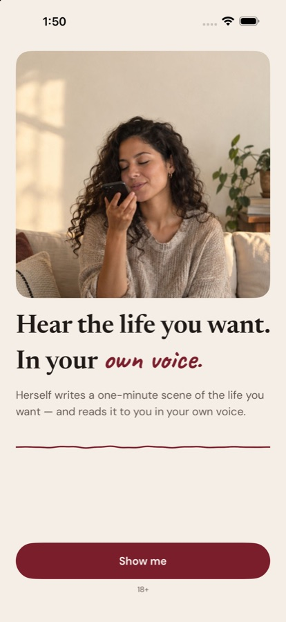

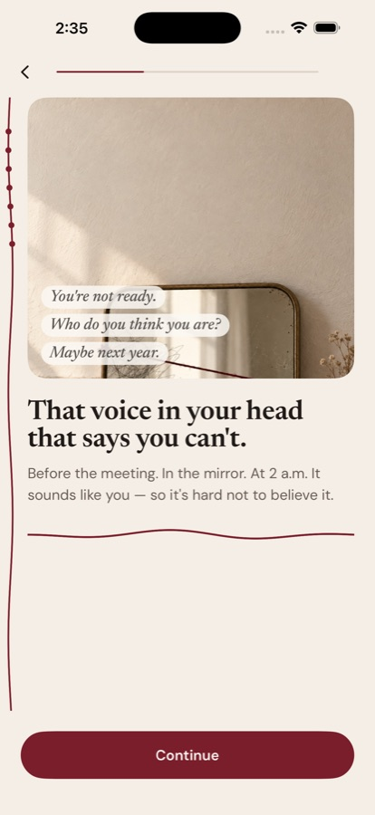

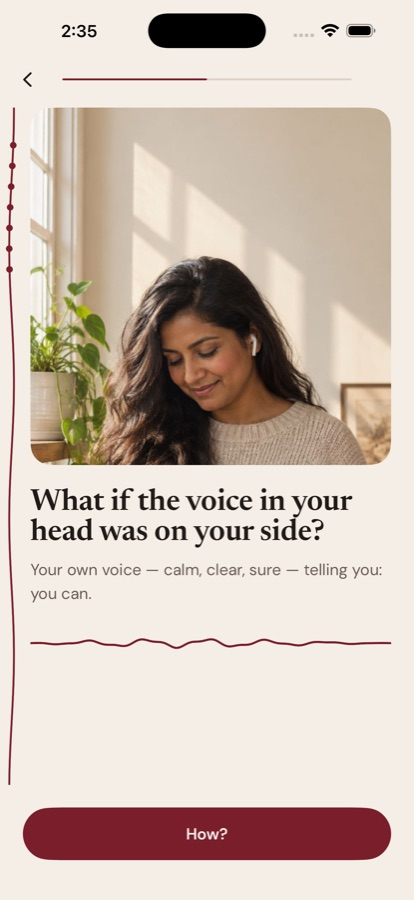

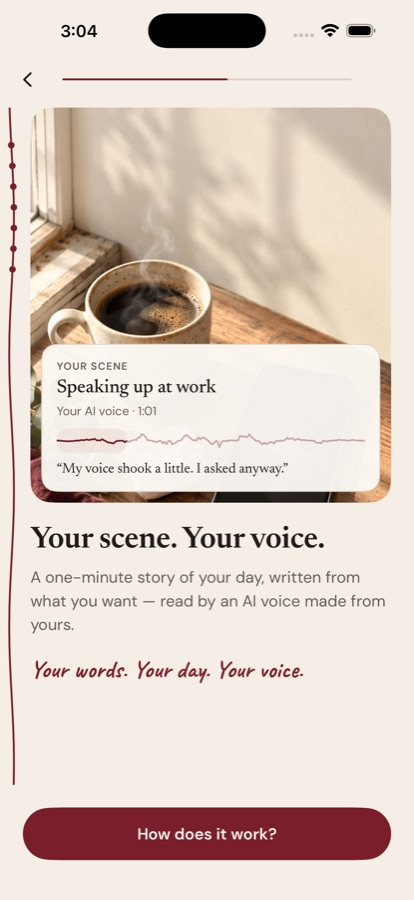

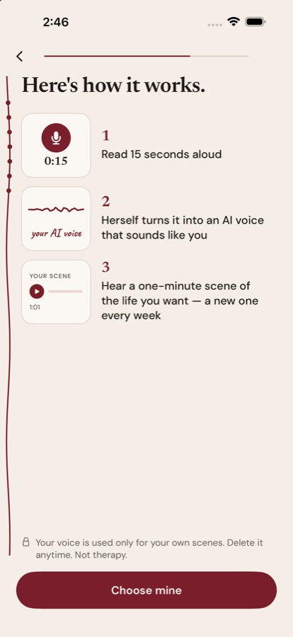

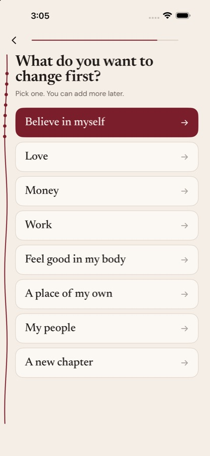

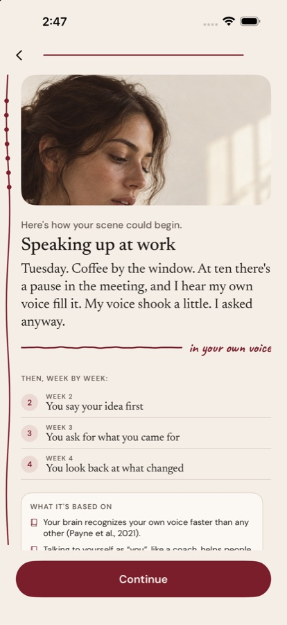

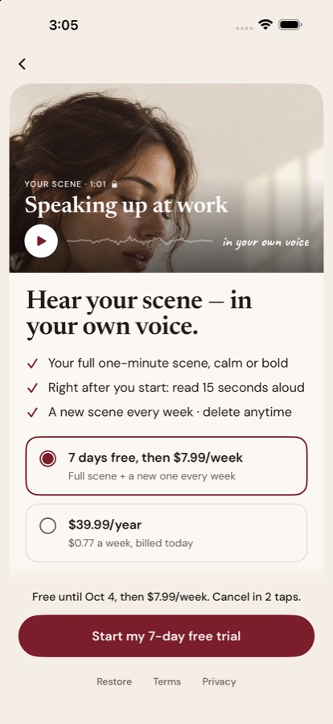
F7 «Скажи вслух» — прошлый вариант

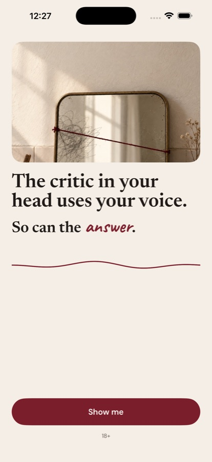

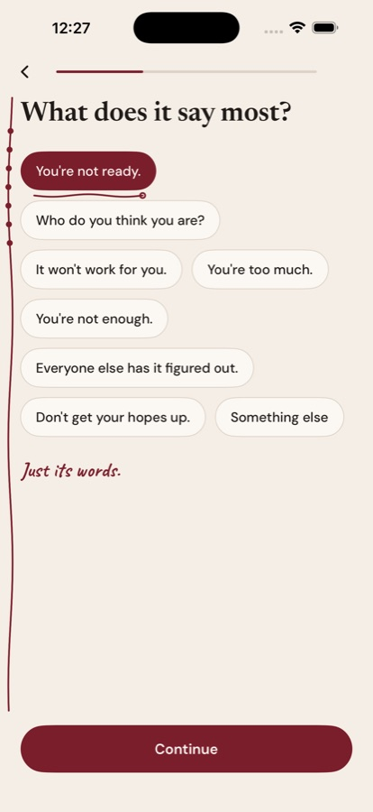

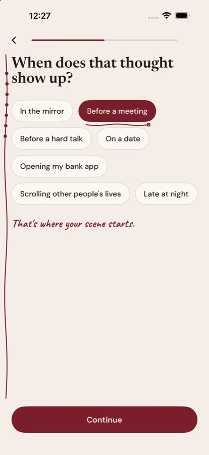

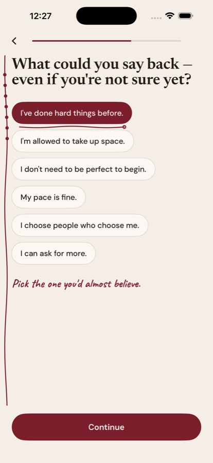

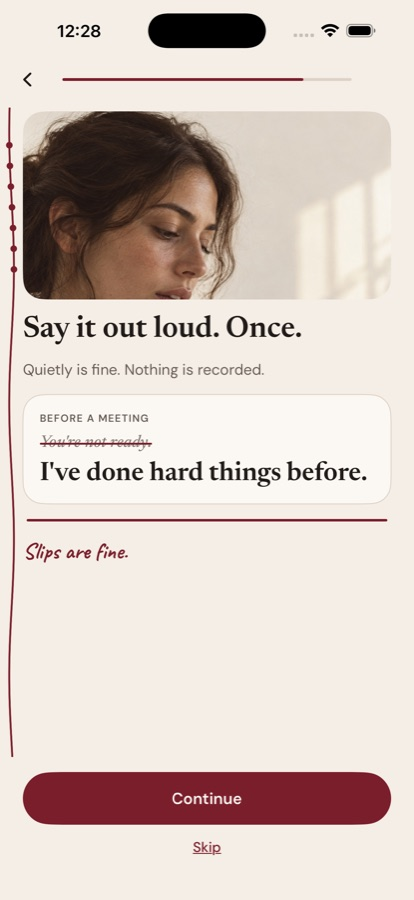

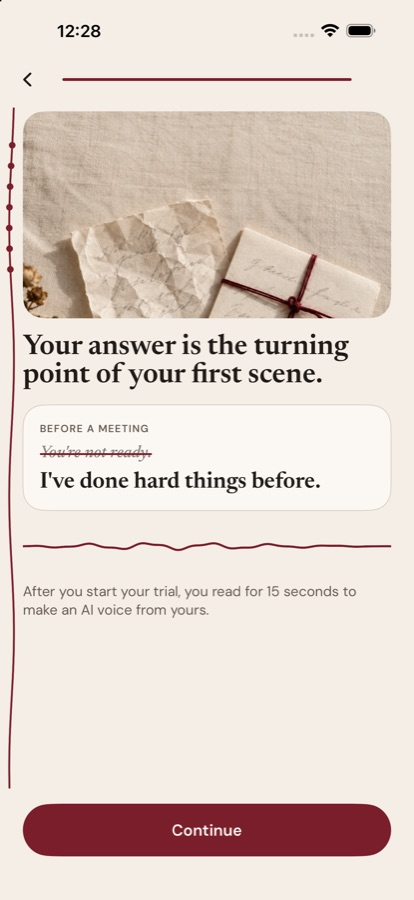

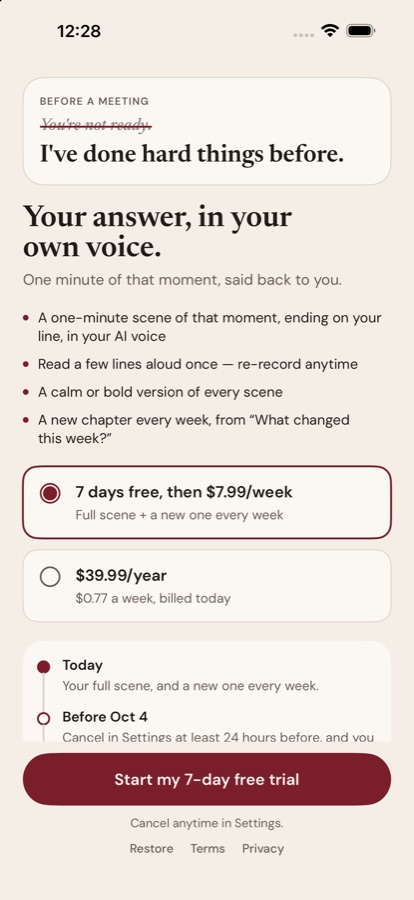
Итог после отзыва основателя — F11 «Показать, а не спрашивать». Собран в симуляторе, режим по умолчанию show.
Что сказал основатель о F7: «похоже на онбординг после оплаты: мы задаём больше вопросов, чем даём ответов». Человек со скриншота ничего о приложении не знает, поэтому сначала нужны узнавание, понятность, визуал и хотелки, и лишь потом решение.
Путь F11 (6 экранов + пейвол, один вопрос):
- Узнать себя. Продолжение скриншота 1: фото девушки, которая наговаривает себе голосовое; «Hear the life you want. In your *own voice.*»; «Herself writes a one-minute scene of the life you want — and reads it to you in your own voice.»
- Проблема. «Affirmations that don't sound like you?» Чужие аффирмации гаснут, каракулю критика расчёсывает нить. Рукописная строка: «Herself answers it — with yours.»
- Что это. Фото чашки у окна, поверх — карточка плеера «Your scene · Speaking up at work · Your AI voice · 1:01». Заголовок «Your scene. Your voice.»
- Как это работает, честно. Три шага с мини-визуалами (выбор → 15 секунд чтения → её сцена её AI-голосом) и строка про приватность: «not therapy».
- Единственный вопрос. «What do you want to change first?» Фото-карточки от большего к меньшему; один тап — и переход дальше: - Believe in myself · Love · Money · Work; - Feel good in my body · A place of my own · My people · A new chapter.
- Конфетка. Фото её желания, название и начало её сцены. Фразы появляются по одной, внизу рукописная строка «The rest plays in your own voice.»
- Пейвол. Сверху карточка её сцены с замком; «Hear your scene — in your own voice.»; 4 пункта, в том числе «сразу после старта прочитай 15 секунд, не похоже — перезапиши»; недельный план с триалом.
Правки 27.09 по отзыву основателя и дизайнеру (DESIGN_SPEC.md, макеты — design/):
- W4 «It's one button.» Живая сцена: тап → её чтение 15 секунд (слова загораются, кольцо заполняется) → её сцена играет. Под ней три такта: «Tap once · Read 15 s · Hear it».
- W5 — редакционный указатель вместо сетки фото. Строки с фото 64 pt, названием Newsreader 22 и шёпотом-строкой из её сцены.
- Единая шкала типографики: - заголовки: 40 на A1, 32 на остальных экранах; - текст 17, рукописная строка 26; - поля 32/24 при нити; - кадры тянутся и занимают свободную высоту.
- Пейвол: - без подзаголовка, 3 однострочных пункта; - строка «Free until …, then $7.99/week. Cancel anytime.» над кнопкой; - Restore/Terms/Privacy — зона нажатия 44 pt; - стрелка назад: можно вернуться и выбрать другое желание, сцена на пейволе поменяется.
v2.6 — «How it works» показывает метод и путь к цели, а не только голос (по отзыву основателя; Jev R17–R18 на новых персонажах, 900 вызовов):
- Экран «How Herself moves you toward it.». Подзаголовок: «No manifesting magic, no promises. A one-minute rehearsal, repeated — a method built on research.» Метод — нить, которая поднимается к карточке «Your goal» через 4 шага; у каждого строка из EVIDENCE §A10: 1. See it — сцена её момента (Carrillo et al., 2019 — «лучшее возможное я» поднимает настрой и оптимизм); 2. Hear it in your own voice (Payne et al., 2021); 3. Repeat it — минута в день (Lally et al., 2010 — привычки); 4. Track one step a week — дневник «что изменилось» (Harkin et al., 2016 — 138 экспериментов).
Ниже «To start: read 15 seconds aloud once» и строка доверия.
- R17. Метод без блока доверия (M1): - рядом «заплатит» 0,36 против 0,26 у варианта «про голос», во всех перемешиваниях; - но доверие и понятность ниже, переобещание 1,31, у скептика «обманули» 0,62.
- R18 — гибрид M4 (метод + «no magic, no promises» + доверие), рядом, во всех перемешиваниях: - «лучший» 0,79, «доверяет» 0,95, «заплатит» 0,71, «интерес» 0,66, «понятно» 0,61; - эзотерика 0,14; - в одиночной оценке переобещание 0,95, у скептика «обманули» 0,58.
Взяли M4.
v2.5 — переобещание найдено и снято, доверие скептика (Jev R14–R16 на новых персонажах, 1 215 вызовов):
- Где переобещание (R14). Jev назвал экраны, которые обещают больше, чем даёт приложение: - главный экран перед пейволом (сцена, план и исследования) — 0,35; - надежда «saying what you need» — 0,35; - первый экран — 0,14.
У скептиков то же самое.
- Что снимает переобещание (R15, по одной правке):
| Правка | Переобещание | |---|---| | исходный вариант | 1,78 | | убрать блок исследований | 1,62 | | сцена как репетиция: «Here's how your practice scene could begin.», «A rehearsal, not a prediction.», «week by week, you practice» | 1,51 | | мягкая надежда: «Now imagine a kinder voice answering.» | 1,73 | | репетиция + мягкая надежда | 1,48 |
«Заплатит» при этом не падает (0,092). Первый экран не трогаем: он продолжает скриншот из стора.
- Доверие и «How it works» (R16). - Строка «No manifesting magic, no promises. Just a one-minute rehearsal of your day, in your own voice.» и блок доверия (private · delete anytime · not therapy + Payne 2021): переобещание 0,89–0,92. - У скептика: «обманули» 0,63 → 0,56, доверие 0,26 → 0,31, триал 0,22 → 0,26. - Напоминание за 2 дня до конца триала и «Cancel in 2 taps»: «обманули» у всех 0,51 → 0,45. - Сравнение рядом в R16 не учитывается: у вариантов по ошибке было одинаковое краткое описание.
- В приложении: - «How it works»: три мини-экрана телефона, блок доверия с иконками, строка Payne 2021; - сцена как репетиция; - мягкая надежда; - пейвол: строка таймлайна «We remind you: your trial ends in 2 days» и настоящее локальное напоминание на 5-й день триала, если она разрешит уведомления.
Что ещё можно сделать для скептика и низкого дохода (решение основателя):
- Настоящий отзыв первых тестировщиц, например Нат: «Голос свой узнала сразу», с её согласием и пометкой «early tester». FTC требует раскрывать связь с автором отзыва.
- Для низкого дохода: годовой план заметнее ($0,77 в неделю) или месячный — сейчас его нет (D8).
v2.4 — злодей на втором шаге и проверка на новых персонажах (Jev R13 и hold-out, 1 080 вызовов):
- Второй шаг (R13). Победил V3 «Which ones do you hear?»: - мысли критика всплывают пузырями: «You're not ready.», «Who do you think you are?», «He'll never choose you.», «You'll always be bad with money.», «Look at yourself.», «Everyone else has it figured out.», «Maybe next year.»; - их можно отметить тапом, необязательно; «That's your inner critic. It talks in your own voice.»; - рядом: «лучший» 0,39, «доверие» 0,72, «интерес» 0,47 — во всех перемешиваниях; «заплатит» 0,30, первое место в 7 когортах из 9; давление самое низкое.
- Новые персонажи. 45 женщин, по 5 на когорту, которых не было при настройке:
cohorts-v3-2026-09-26/people_holdout.json. - Финальная версия победила рядом — «заплатит» 0,43, 9 из 9 когорт. Но её чаще называли «самой эзотерической» (0,85), и она была менее понятной (0,08). - Исправление FH3W: - надежда без «голоса в голове»: «Now imagine hearing the answer.» — «Your own voice — calm and clear — saying what you need before that meeting, that mirror, that 2 a.m.»; - вернулся экран «Your scene. Your voice.» с карточкой плеера. - Итог FH3W на новых персонажах (рядом): «заплатит» 0,40, «понятно» 0,64, «интерес» 0,52, эзотерика 0,15 против 0,47 до исправления. - Оформление триала понятно: 3,53 из 4 — что бесплатно, когда и сколько спишут, как отменить. У эталона с записью до пейвола 3,30. - «Как это работает»: 3,56 из 4. - По типам персонажей (FH3W, одиночная оценка):
| Тип | Дошла до пейвола | Триал | «Обманули» | Условия триала (0–4) | |---|---|---|---|---| | воодушевлённая | 0,51 | 0,73 | 0,41 | 3,61 | | средняя | 0,33 | 0,52 | 0,45 | 3,50 | | скептик | 0,12 | 0,21 | 0,65 | 3,62 | | с низким доходом | 0,29 | 0,29 | 0,64 | 3,39 |
Условия триала понятны всем. Скептик и женщина с низким доходом уходят не от непонятности, а от недоверия и цены: «обманули» у них 0,65 и 0,64. Это задача следующего шага: чем снять недоверие скептика и что предложить при низком доходе.
- Путь v2.4: герой → злодей («Which ones do you hear?») → надежда («Now imagine hearing the answer.») → что это («Your scene. Your voice.») → как это работает (3 шага) → выбор трека (текст) → её сцена, недели и «на чём основано» → пейвол во всю ширину.
v2.3 — формула «герой → боль → надежда → как это работает → выбор → её сцена → пейвол» (по отзыву основателя: «второй шаг непонятен, причём тут аффирмации»; Jev R10–R12, 837 вызовов):
- Боль и надежда (R10). - Боль — главная, внутренний критик (J1): «That voice in your head that says you can't.» - Надежда: «What if the voice in your head was on your side?» - «Заплатит» рядом 0,31 — первое место в 7 когортах из 9. - Одно усиление без надежды проваливается: «заплатит» 0,02, эзотерика 0,45. - Экран «аффирмации не твоим голосом» (C0) был самым понятным, но убеждает меньше.
- «Одна кнопка» (R11). Побеждает прямое объяснение «Here's how it works.» в три шага с картинками: 1. «Read 15 seconds aloud»; 2. «Herself turns it into an AI voice that sounds like you»; 3. «Hear a one-minute scene of the life you want — a new one every week».
Рядом: «доверие» 0,70, «понятно» 0,85 — во всех перемешиваниях. «Понятно, что делать и что получишь» 3,59 из 4. Экран «что это» стал не нужен.
- Выбор трека (R12). Текст без картинок — первый по «доверию» (0,54) и «понятно» (0,45) во всех перемешиваниях. Фото-карточки выбирать чуть приятнее, но они не понятнее. Одна атмосферная картинка над списком добавляет эзотерики (0,56). Оставили текст крупнее: Newsreader 24, строки по 62 pt.
- Пейвол как в Two Sparrows: одна карточка во всю ширину. - Сверху её сцена: фото, название, play, её линия голоса и «in your own voice», замок. - Ниже в той же карточке: заголовок 34, пункты с галочками, крупные тарифы, таймлайн.
Открытый риск: переобещание. У всех вариантов R10–R12 оно 1,78–1,89 при запретной границе 1,6. До блока «What it's based on» было 1,62. Следующий шаг — найти строку-виновницу. Кандидаты: научные строки, «telling you: you can», «Hear the life you want».
Правки 27.09, второй заход (по отзыву основателя):
- W4 «One button. Your goal — in your own voice.» Одна большая кнопка, от неё нить к её результату: карточка «Your plan · Week 1 ▶». Деталей почти нет.
- W5 — простой список крупным текстом, без картинок: 8 строк, один тап.
- W6 — главный экран перед пейволом. Проверен в Jev, раунды R7 и R9. Состав: - начало её сцены, «in your own voice»; - «Then, week by week» — недели 2–4 как шаги, не результаты (EVIDENCE §A6); - «What it's based on» — три строки с источниками из EVIDENCE §A10 (Payne 2021, Kross 2014, Gollwitzer & Sheeran 2006); - строка о методе: «rehearse the moment before you live it».
Выдуманных отзывов и «многих женщин» нет.
- W3 смягчён: вместо «the thing you want is already happening» теперь «a one-minute story of your day, written from what you want». Переобещание у всех вариантов было около 1,6 — это граница запрета.
Jev, R7–R9 (567 вызовов):
- Только инструмент (план без сцены, T1–T4) — самый доверительный и понятный, эзотерики меньше. Но по «заплатит» рядом он проигрывает началу сцены: 0,10–0,16 против 0,39.
- Гибрид T5 — сцена, недели и «на чём основано»: - в сравнении рядом: «доверие» 0,60, «интерес» 0,47, «понятно» 0,65 — во всех перемешиваниях; - «самый эзотерический» лишь 0,10, у одной сцены 0,67; - «заплатит» почти вровень: 0,31 против 0,35.
Взяли T5.
- Пейвол: карточка её сцены и «Hear your scene — in your own voice.» (PA) побеждает во всём: «заплатит» 0,55, «лучший» 0,54, «понятно» 0,84, во всех перемешиваниях. Карточка плана в шапке (PB, PC) проигрывает. Оставили PA.
Цифры (R6, по доле платящих):
| Дошла | Оплата (воронка) | Понятность (0–4) | Рядом: лучший | Рядом: доверие | Рядом: заплатит | Рядом: понятно | Рядом: интерес | |
|---|---|---|---|---|---|---|---|---|
| F11 «Показать» | 0,38 | 0,12 | 3,42 | 0,51 | 0,54 | 0,31 | 0,83 | 0,44 |
| F7x «Скажи вслух» | 0,32 | 0,10 | 2,89 | 0,12 | 0,02 | 0,25 | 0,01 | 0,30 |
| F6 эталон с записью до пейвола | 0,18 | 0,05 | 3,12 | 0,27 | 0,43 | 0,33 | 0,16 | 0,26 |
- F11 первый во всех трёх перемешиваниях по «лучший», «доверие», «понятно» и «интерес».
- По «заплатит» он вровень с эталоном (0,31 против 0,33), при этом до пейвола доходит вдвое больше людей.
- Минус: «самый эзотерический» среди трёх — 0,51, хотя в одиночной оценке его «эзотерика» самая низкая (0,58). Кандидаты на проверку: строка «the thing you want is already happening» и хук «Hear the life you want».
Apple — почему «показать» ещё и безопаснее:
- 2.3.1 и 4.0: онбординг честно показывает, что делает приложение — запись 15 секунд, AI-голос, новая сцена раз в неделю. Одних абстракций ревью не пропустит.
- 3.1.2: на пейволе цена, срок, триал с датами, «Cancel anytime», Restore / Terms / Privacy.
- 5.1.1 / 5.1.2: согласие на ИИ и клон голоса стоит отдельным экраном прямо перед микрофоном, уже после пейвола.
- HIG «Onboarding»: коротко, показывать ценность, не спрашивать лишнего, давать начать быстро. Остаётся один вопрос, а не шесть.
Предыдущий итог (до отзыва) — F7 «Скажи вслух» + пейвол P2 с правками Codex (F7x).
Как проводили
- Сценарии клиенток для 5 самых платящих когорт —
SCENARIOS.md(агент-исследователь, реальные цитаты из отзывов). - 8 формул (агент-продюсер и режиссёр,
FORMULAS.md,formulas.json): - F1 Зеркало; - F2 Диагностика → план; - F3 День из жизни; - F4 Записка через месяц; - F5 Минута тишины; - F6 эталон O1 (K4 с записью и превью); - F7 Скажи вслух; - F8 Клиффхэнгер и её голос; - позже добавлен F10 «Критик → половина сцены → пример голоса».
Все тексты прошли story_lint.py.
- Jev: 27 персон (9 когорт × 3, третья — скептик), веса по доле платящих. 18 раундов + проверки на новых персонажах, 6 543 вызова:
| Раунд | Что | Вызовы |
|---|---|---|
| R1 | 8 формул: каждая отдельно + рядом | 513 |
| R2 | F7 и F1 + «доказательство голоса» (пример Даны) + цена на первом экране | 351 |
| R3 | 5 пейволов под F7 | 351 |
| R4 | F7 / F8 / F10 / F10 без примера | 297 |
| R5 | F7+P2 против F7+P2 с правками Codex | 189 |
| R6 | F11 «Показать» против F7x и эталона F6 | 243 |
| R7 | главный экран: сцена против инструмента-плана ± исследования ± метод | 351 |
| R8 | пейвол: карточка сцены против карточки плана ± строка об исследованиях | 243 |
| R9 | гибриды: сцена + план + «на чём основано» | 297 |
| R10 | формула: боль → усиление / надежда | 351 |
| R11 | понятность «одной кнопки» | 243 |
| R12 | выбор трека: текст или картинки | 243 |
| R13 | второй шаг: злодей и всплывающие боли | 351 |
| hold-out 1 | финал против v2.2 и эталона, 45 новых персонажей | 405 |
| hold-out 2 | исправление надежды и экран «что это» | 405 |
| R14 | какой экран переобещает (новые персонажи) | 90 |
| R15 | снятие переобещания по одной правке | 540 |
| R16 | доверие скептика, «How it works» | 585 |
| R17 | «How it works»: метод и путь к цели | 495 |
| R18 | метод + доверие (гибрид) | 405 |
Метрики:
- дошла до пейвола, триал, останется, «попросит возврат или поставит 1★», «обманули»;
- интерес к тому, что за пейволом, понятность ценности, «про меня», доверие, эзотерика, давление, переобещание;
- в сравнении рядом: лучший, доверие, самый эзотерический, заплатит, интерес, понятность.
- Codex Astra: второе мнение и правки текста —
codex_opinion.md. - Картинки: 5 кадров через Codex —
img/, в приложении 3 из них.
1. Формулы (R1)
| Дошла | Оплата (воронка) | «Обманули» | Интерес за пейволом (0–4) | Рядом: заплатит | Рядом: доверие | Рядом: эзотерика | |
|---|---|---|---|---|---|---|---|
| F5 Минута тишины | 0,43 | 0,13 | 0,46 | 2,13 | 0,05 | 0,23 | 0,68 |
| F2 Диагностика | 0,37 | 0,11 | 0,46 | 2,04 | 0,03 | 0,03 | 0,01 |
| F1 Зеркало | 0,33 | 0,11 | 0,48 | 2,23 | 0,11 | 0,04 | 0,09 |
| F3 День | 0,33 | 0,10 | 0,47 | 2,23 | 0,05 | 0,01 | 0,01 |
| F7 Скажи вслух | 0,32 | 0,10 | 0,49 | 2,15 | 0,19 | 0,36 | 0,03 |
| F4 Записка | 0,32 | 0,10 | 0,49 | 2,03 | 0,04 | 0,04 | 0,18 |
| F8 Клиффхэнгер + голос | 0,20 | 0,06 | 0,50 | 2,08 | 0,20 | 0,04 | 0,01 |
| F6 эталон O1 | 0,18 | 0,05 | 0,56 | 2,18 | 0,25 | 0,23 | 0,00 |
- Запись до пейвола режет охват вдвое: на экране согласия у эталона F6 уходят 0,49.
- Когда формулы видят рядом, её голос до пейвола убеждает сильнее всего: у F6 «понятно» 0,72.
- F5 и F4 уходят в эзотерику: «дыши с нитью», «записка из будущего».
- F7 — самый доверительный во всех перемешиваниях.
2. Что не сработало (R2, R4)
- «Доказательство голоса» — пример другой женщины («Dana's 15 seconds → Dana's scene»). На этом экране уходят 0,18–0,28, переобещание растёт до 1,54, доверие рядом падает до 0,07. Чужой голос, говорящий «я», — это боль из отзывов на Stella.
- Цена на первом экране («7 days free, then $7.99/week» мелко). «Обманули» 0,54 против 0,49, давление 1,86 против 1,57. Сценарии и Codex её советовали, Jev против. Оставляем цену на пейволе, но проверить в A/B.
- F10 «критик → половина сцены → пример» — лучший по понятности рядом (0,60), но по «заплатит» слабее F7 (0,12 против 0,27). Без примера F10 доходит лучше (0,37), но проигрывает рядом.
3. Пейвол (R3, всё на F7)
| Вариант | Оплата | «Обманули» | Возврат/1★ | Рядом: заплатит | Рядом: доверие | Интерес | |
|---|---|---|---|---|---|---|---|
| P1 | как есть: «Hear it said back — in your own voice.» + 4 пункта | 0,10 | 0,49 | 0,34 | 0,23 | 0,18 | 0,29 |
| P2 | её ответ — герой в шапке + 4 пункта | 0,10 | 0,47 | 0,33 | 0,22 | 0,11 | 0,42 |
| P3 | 3 пункта + «прочитаешь 15 с, не похоже — перезапиши или отмени до 7-го дня» | 0,09 | 0,50 | 0,35 | 0,13 | 0,41 | 0,12 |
| P4 | годовой по умолчанию | 0,10 | 0,56 | 0,40 | 0,17 | 0,02 | 0,05 |
| P5 | P2 + P3 | 0,09 | 0,48 | 0,33 | 0,12 | 0,28 | 0,12 |
- Различия в «оплате» — шум. P2 выбран по самому низкому «обманули» и самому высокому интересу.
- Годовой по умолчанию ухудшает «обманули» и возвраты. Оставляем недельный с триалом (D8). Годовой выбирает только когорта «поверить в себя» (0,28 в сравнении рядом).
4. Правки Codex (R5)
Правки:
- «When does that thought show up?» вместо «When does it get loudest?»;
- «What could you say back — even if you're not sure yet?»;
- кнопки «Continue» / «Skip» вместо «I said it»;
- без экрана «How did that feel?»;
- «Your answer is the turning point of your first scene.» и честная строка о чтении 15 секунд после старта триала;
- вариант «Something else» у критика.
Результат:
- рядом: «лучший» 0,55 против 0,23, «доверяет» 0,66 против 0,34, «заплатит» 0,43 против 0,31 — во всех перемешиваниях;
- по воронке «оплата» та же (0,10), но на экране поворота уходят больше (0,30 против 0,19). Честная строка отсекает часть тех, кто иначе попросил бы возврат.
5. Риски и что дальше
- Запись после пейвола — главный риск возвратов (Codex). Первая минута после оплаты: 1. согласие; 2. короткое чтение; 3. её ответ в её сцене её голосом; 4. «Not like you? Record again» и отмена на виду.
Jev оценивает возвраты у F7 и F8 одинаково — Codex считает это неопределённостью, а не хорошей новостью.
- A/B после запуска — F7x против F8: - главная метрика: чистые платящие на вошедшую в онбординг, с учётом возвратов; - ограничители: возвраты и жалобы, сбои создания голоса, время до первого прослушивания.
- В приложении: режим F7 по умолчанию («Say it»); «Voice first» (K4 с записью и превью, ближе к F8) и «Direct» — в отладке.
Файлы:
- формулы:
formulas.json,formulas_r2…r5.json; - запуски:
run.py,run_r2…r5.py; - отчёты:
report*.py,summary*.txt; - данные Jev:
agg/,r2…r5/,raw/; - картинки:
img/; - видео F7:
f7.mp4, экраны —screens/.